🎓 학력 · 자격
- 서울대학교 정보문화학(ICT)
- 구글 공식 PD 파트너사 (Google PD Partner)
- Google Certified Trainer (구글 공식 트레이너)
- Gemini Certified Educator (제미나이 에듀케이터)
- ADsP · 데이터 분석 준전문가
📰 언론 보도 · 공식 성과
- 중앙뉴스타임스(2025.11) · 인천시교육청 교육연수원 직무연수
- 인천광역시교육청(2025.12) · 초·중등 교실수업혁명 직무연수 운영
- 미디어투데이(2025.07) · 파주교육지원청 AI 소통 역량 강화·실무 적용
🏫 교육 · 행정 혁신 주요 경력
- 구글 코리아 제미나이 아카데미 주강사
- 전국 학교장·교감 교원 대상 AI 리터러시 리더십 연수 200회+
- 대학 교직원·교수·학생 대상 AI 행정 혁신 연수
- 고려대·성균관대·숙명여대·한양대 등 대학 연수
- 용인·이천교육지원청 AI 연수
- 경기도교육연구원 박사급 연구원 대상 정책연구 AI 활용 연수
- 5~9급 교육행정직 공무원 AI 정책보고서 연수
- 한국과학창의재단 ‘찾아가는 학교컨설팅’ 코디네이터·주강사
- 대원외고 등 특목고 AI 연수 및 영재교육연구소 강사 양성 연수
💼 산업 현장 실무
- FlowDX 대표 — AI 비즈니스 모델링·공공기관 DX 전환 컨설팅 총괄
- Ebay·G마켓·옥션 해외 플랫폼 개발 프로젝트 기획 참여
- Nexon·Ebay 등 글로벌 기업 주요 프로젝트 기획·개발
📚 주요 저서
- 『HTML, CSS, JavaScript를 배우는 마법코딩학교』
- 『AI시대, 보고서가 당신의 무기가 된다』
- 『AI 기반 문화콘텐츠 기획』
오늘 배울 것
카드를 누르면 열립니다. 연수에서 안내받은 암호가 필요합니다.
암호를 넣으시면 모든 탭이 열립니다.
“이거, 내가 매주 똑같이 하고 있나?”
오늘 가져가실 건 도구가 아니라 이 질문 하나입니다. 그렇다면 → 스킬, 파일이 쌓여 있다면 → 코워크입니다.
이 판은 스킬을 앞에 두고 전원이 하나씩 만들게 합니다. 코워크는 주로 보여드립니다. 이유는 둘입니다 — 스킬은 무료 계정에서도 되고, 연수가 끝나 연수용 계정이 없어져도 스킬 파일은 남기 때문입니다.
시간이 밀리면 묶기 탭을 통째로 건너뛰고 “교안에 있습니다”로 넘기세요. 마무리 10분은 지키셔야 합니다.
시작 전 세팅
미리 설치해 두신 것을 다 같이 한 번 확인하고 시작합니다.
① 한글 파일이 만들어지는지
`여주초양식` 폴더에 넣어 둔
테스트_2026학년도 4학년 과학관 체험학습 신청 안내장.hwpx를 한글에서 열어 보세요. 열리면 hwpx 편집이 되는 것이고, 안 열리면 알려주시면 다른 방법으로 바꿉니다.② 한글 양식 스킬이 도는지
연수용 계정에 여주초 한글 양식 스킬을 올리고, 빈 한글 양식을 대화창에 올린 뒤 이렇게 시켜 보세요.
→ “4학년 국립과천과학관 체험학습 안내장 만들어 줘. 11월 6일(금), 신청 기한 10월 24일(금)”
한글 파일이 나오고 그 파일이 한글에서 열리는지까지 확인하시면 당일에 안심입니다.
③ 프로젝트 시연 준비
강사 계정에 「과정안」 프로젝트를 미리 만들어 두세요. 넣을 것은
프로젝트_과정안_시연자료 폴더에 모아 두었습니다 — 성취기준 발췌 PDF · 과정안 본보기 · 지침. 당일에 올리면 5분이 넘어갑니다.④ 연수용 계정 모델
소네트로 되어 있는지 확인하세요. 옵스로 두면 사용량을 훨씬 빨리 씁니다.
⑤ 당일 로그인 — 여기서 제일 많이 밀립니다
들어오시는 대로 인사 전에 로그인부터 시작시키세요. 계정과 메일함 암호는 종이로 각 자리에 두시는 게 빠릅니다. “메일함은 컴퓨터에서 여세요”를 먼저 크게 말씀하셔야 합니다 — 폰으로 열면 코드를 옮겨 적느라 두 배로 걸립니다. 먼저 끝내신 분께 옆자리를 봐 달라고 부탁하시면 훨씬 빨리 끝납니다.
⑥ 폴더 연결 한 번
실습자료를 받아 바탕화면에 풀고, 연수용 계정에서 연수실습 폴더를 한 번 연결해 보세요. 당일 세팅에서 선생님들이 겪을 것을 미리 겪어 두시는 게 좋습니다.
①②가 안 되면 한글 파일 대신 “화면에 보여 줘”로 진행하시면 됩니다. 스킬 안에 그 대안도 적혀 있습니다.
먼저 — 지금 화면이 어떤가요
클로드가 요즘 바뀌는 중입니다. 옆자리 선생님과 화면이 다를 수 있습니다. 둘 다 정상이니 놀라지 마세요. 입력창 아래를 한 번 보시면 됩니다.
채팅 / Cowork가 보인다
아무것도
없다
차례로 확인합니다
Cowork는 설치한 프로그램에서만 작동합니다. 인터넷 창(claude.ai)에서는 아무리 찾아도 없습니다.
연수용 계정은 메일로 로그인하는 방식입니다. Claude 앱에 이메일을 넣으면 그 주소로 로그인 메일이 오고, 메일함에 들어가 로그인 버튼을 누르면 앱이 저절로 열립니다.
같은 컴퓨터에서 링크를 누르면 바로 로그인됩니다. 폰에서 누르면 숫자 코드가 나오고, 그걸 컴퓨터에 옮겨 적어야 합니다.
①② 앱이 열리면 로그인 화면이 나옵니다. Google로 계속하기는 누르지 말고, ‘이메일을 입력하세요’ 칸에 부여받은 주소를 넣고 이메일로 계속하기를 누릅니다.
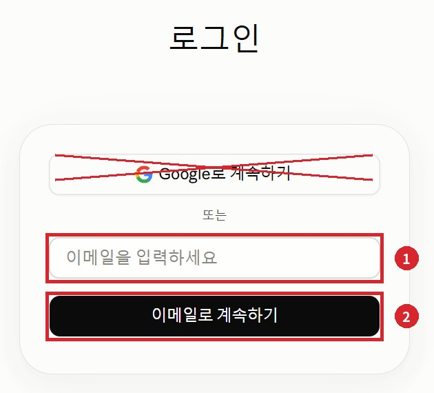
잠시 뒤 아래 화면이 나옵니다. 주소가 맞는지 확인하고 Claude 앱은 이 화면 그대로 둡니다. 인증 코드 칸은 비워 두셔도 됩니다. 주소를 잘못 넣으셨으면 이메일 주소 변경을 누르세요.
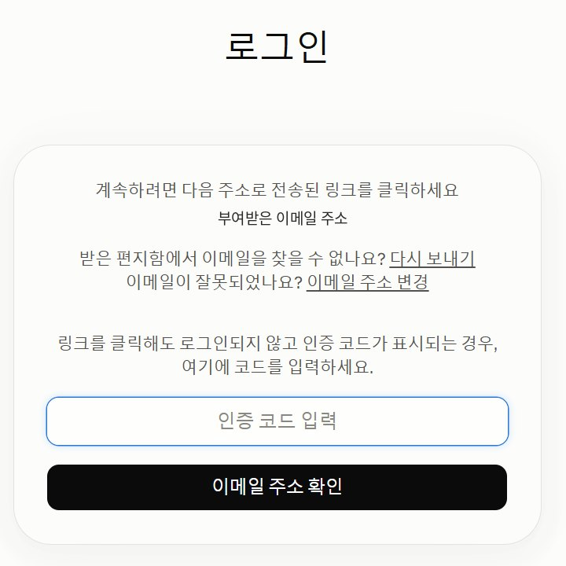
③④⑤ 크롬이나 엣지 같은 인터넷 창을 새로 열어 주소창에 email.oliven.kr을 입력합니다. 사용자명에 조금 전 Claude에 넣었던 이메일 주소를 그대로, 암호에 부여받은 암호를 넣고 로그인합니다.
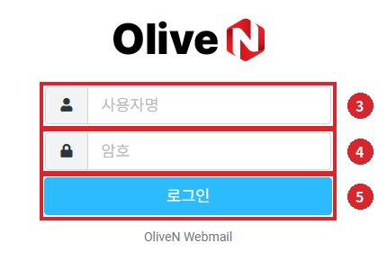
⑥⑦ 받은 편지함 맨 위에 있는 가장 최근 메일(Anthropic, ‘Claude.ai의 보안 링크가 도착했습니다’)을 누르고, 오른쪽에 열린 메일의 로그인 버튼을 누릅니다.
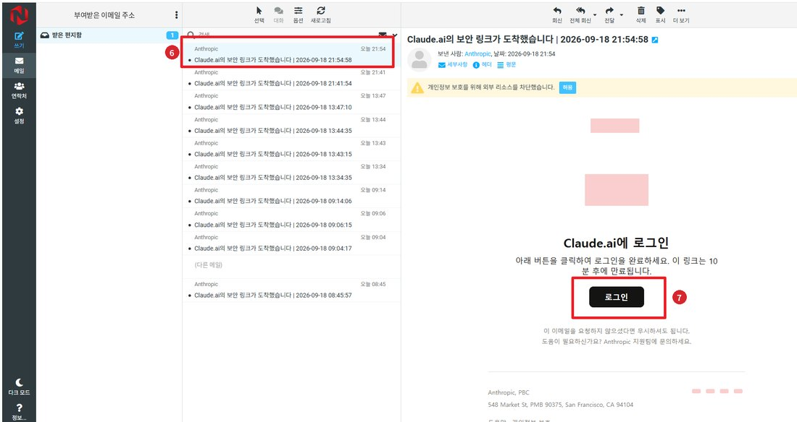
⑧ 새 탭에 ‘Claude을(를) 여시겠습니까?’ 창이 뜹니다. 파란색 취소가 아니라 Claude 열기를 누릅니다.
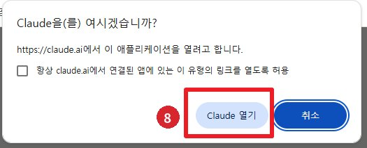
오늘 가장 많이 막히는 지점입니다. 여기만 확인해도 절반은 해결됩니다.
- 앱 왼쪽 맨 아래 계정 이름(부여받은 이메일 주소)을 누릅니다.
- 메뉴가 열리면 맨 위 목록에서 여주초등학교 Team 옆에 체크(✓)가 있는지 봅니다.
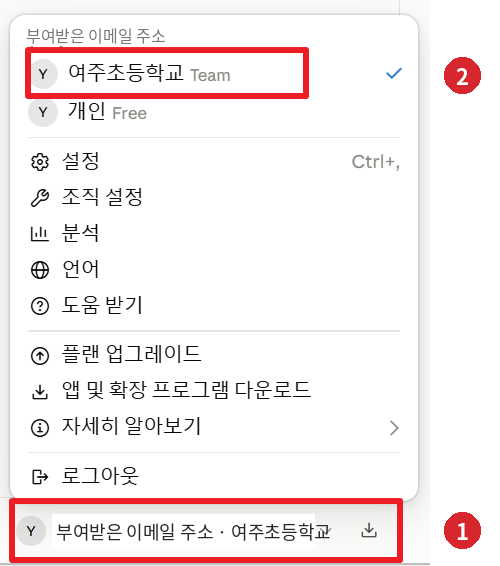
화면 가운데 ‘오늘 어떤 도움을 드릴까요?’ 입력창 왼쪽 아래에 채팅 | Cowork 버튼이 있습니다. Cowork를 누릅니다.
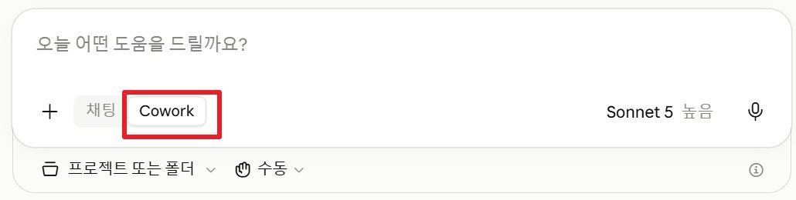
- 위 단추를 눌러 받은 압축파일을 바탕화면에 풉니다. ‘연수실습’ 폴더가 생깁니다.
- 입력창 아래 ‘프로젝트 또는 폴더’를 클릭합니다.
- 메뉴 맨 아래 ‘폴더 추가’를 선택합니다.
- 바탕화면의 연수실습 폴더를 고릅니다.
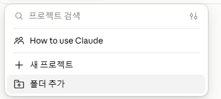
잘 됐는지 한 줄로 확인해 봅니다.
이 폴더에 ‘안녕하세요.txt’ 파일을 만들고, 오늘 날짜와 인사말을 한 줄 적어 줘.
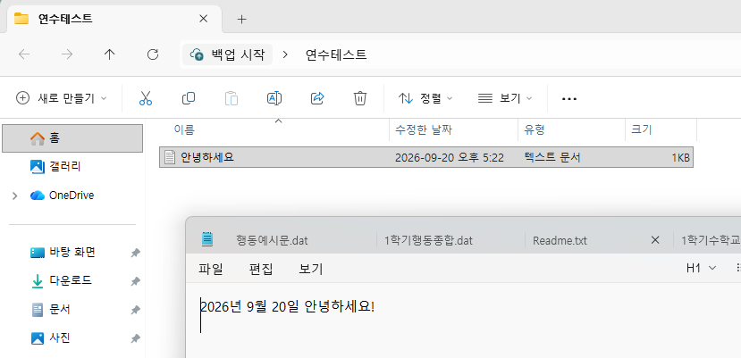
- 설정을 엽니다.
- 기능(Capabilities)으로 들어갑니다.
- ‘코드 실행 및 파일 생성’을 켭니다.
- 이제 사용자 지정(Customize) 안에 스킬이 보입니다.
입력창 오른쪽에 모델 이름이 적혀 있습니다. Sonnet으로 되어 있으면 그대로 두시고, 다른 것으로 되어 있으면 눌러서 Sonnet을 고르세요.
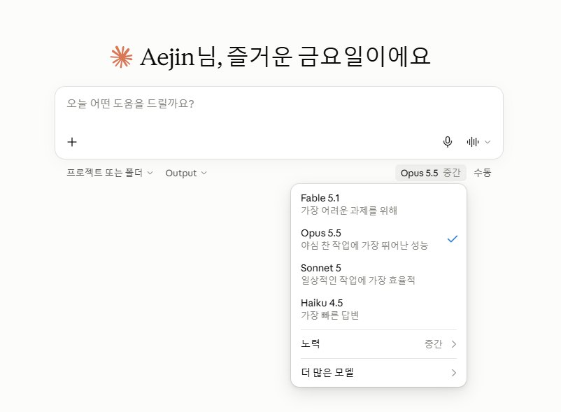
오늘은 이것
지금까지는 복사를 하면 이전에 복사한 게 날아갔습니다. 그래서 하나 붙여넣고, 다시 가서 복사하고, 또 붙여넣고 하셨을 겁니다.
윈도우 키를 누른 채 V를 눌러 보세요. 지금까지 복사한 것이 전부 남아 있습니다. 그중에 골라서 붙여넣으면 됩니다.
Win+V로 골라 쓰시면, 교안을 다시 찾아 들어가지 않으셔도 됩니다. 그래서 세팅에 넣어 뒀습니다.오늘 여러 번 물어보실 것 같아 미리 적어 둡니다. “내가 지금 얼마나 쓴 거지?”
- 오른쪽 위 프로필을 누릅니다.
- 설정 → 사용량으로 들어갑니다.
- 인터넷 창에서는 주소창에
claude.ai/settings/usage를 쳐도 됩니다.
초기화까지 남은 시간이 같이 보입니다
세션과 따로 계산됩니다
미리 준비하실 때
연수 전에 각자 하셔야 하는 부분입니다. 이미 하셨으면 넘어가세요.
윈도우 버전 확인: Windows 키 + R → winver 입력 → 확인.
- 공식 다운로드 페이지에서 설치 파일을 받습니다. 대부분의 Windows PC는 기본(x64) 버전이면 됩니다.
- 받은 파일을 두 번 클릭해 설치합니다.
- 설치가 끝나면 Claude 앱이 열리고 시작하기 버튼이 보입니다. 그 버튼을 누릅니다.
잘 안 될 때
- 인터넷 창이 아니라 설치한 Claude 앱에서 보고 계신가요?
- 왼쪽 아래 계정 메뉴에서 여주초등학교 Team이 선택되어 있나요?
- 앱이 최신 버전인가요? 완전히 종료했다가 다시 열면 업데이트가 적용됩니다.
- 관리자 권한 없이 설치하셨다면 Cowork가 빠진 채로 설치됩니다. 다시 설치가 필요합니다.
- Claude 앱에 넣은 이메일이 부여받은 주소와 정확히 같은지 확인하세요. 글자 하나만 달라도 다른 계정입니다.
- 메일함도 본인 계정으로 로그인하셨나요?
- 1~2분 기다린 뒤 새로고침하고, 스팸함도 확인하세요.
- 그래도 없으면 Claude 앱 화면의 다시 보내기를 눌러 새로 받으세요.
메일함으로 돌아가 같은 메일의 로그인 버튼을 다시 누르면 창이 다시 뜹니다. 10분이 지났다면 Claude 앱에서 다시 보내기를 눌러 새 메일을 받은 뒤 가장 위 메일로 다시 시도하세요.
학교 PC는 보안 정책 때문에 설치가 막혀 있는 경우가 많습니다. 정보(전산) 담당 선생님께 ‘Claude 데스크톱 앱 설치’를 요청해 주세요. Windows 업데이트를 먼저 마친 뒤 다시 시도하면 해결되기도 합니다.
- 시작 메뉴에서 Windows 기능 켜기/끄기를 검색해 엽니다.
- 가상 머신 플랫폼에 체크하고 확인을 누릅니다.
- 컴퓨터를 다시 시작한 뒤 Claude 앱을 엽니다.
정상입니다. 처음 한 번은 작업 환경 파일(약 2GB)을 내려받느라 몇 분 걸립니다. 한 번 받고 나면 다음부터는 빠릅니다.
아닙니다. 강사 화면으로 시연을 함께 보시고, 가능한 부분은 채팅 기능으로 따라 하실 수 있습니다. 오늘 만든 결과물과 자료는 전부 파일로 나눠드립니다. 미리 알려 주시면 자리 배치나 진행에 반영하겠습니다.
2번(로그인)은 미리 해 오신 분은 건너뜁니다. 당일 로그인이 풀린 분만 펼쳐서 보시게 하세요. 메일함을 거치는 방식이라 처음 보면 당황하십니다.
5번의 ‘안녕하세요.txt’는 그냥 확인 절차가 아닙니다. 탐색기를 띄워 실제 파일을 보여주세요. “화면 안이 아니라 내 컴퓨터에 진짜 파일이 생긴다”가 오늘 두 시간의 요점이고, 이 장면이 그걸 3초에 전달합니다.
안 되시는 분은 붙잡지 마세요. 옆자리와 함께 보시게 하고 진행하세요. 끝에 파일로 다 드린다고 먼저 말씀드리면 조급함이 줄어듭니다.
설치 자체가 안 된 분이 계시면 당일 자리 배치를 미리 조정해 두세요. 되는 분 옆에 앉히는 게 가장 낫습니다.
7번(Win+V)은 반응이 확실합니다. “복사한 게 다 남아 있어요?”가 나옵니다. 모르고 계신 분이 정말 많고, 오늘 두 시간 동안 프롬프트를 복사해 쓰실 거라 여기서 꼭 켜게 하세요.
이거, 매주 똑같이 하고 있나
오늘은 여기서 갈라집니다. 두 갈래뿐입니다.
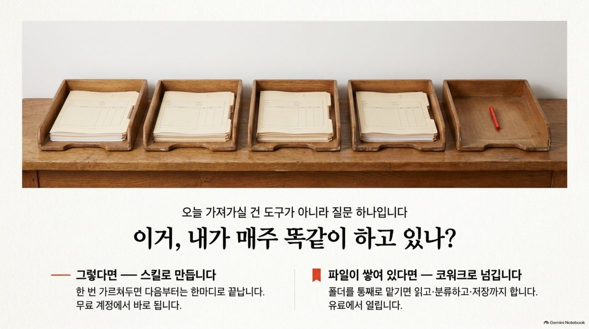
“이거, 내가 매주 똑같이 하고 있나?”
그렇다면 → 스킬로 만듭니다. 한 번 가르쳐두면 다음부터는 한마디로 끝납니다. 무료 계정에서도 바로 됩니다.
파일이 쌓여 있다면 → 코워크로 넘깁니다. 폴더를 통째로 맡기면 읽고·분류하고·저장까지 합니다. 유료에서 열립니다.
이번 주에 무엇을 두 번 이상 하셨습니까
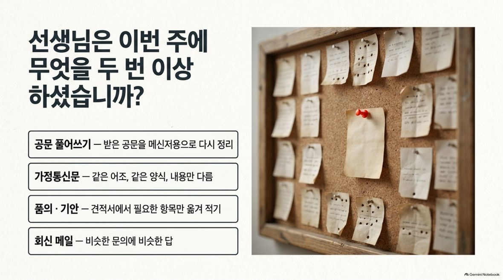
오늘 다룰 것은 딱 두 개
| 구분 | 무엇인가 | 플랜 |
|---|---|---|
| 스킬 | 클로드에게 건네는 나만의 업무 매뉴얼 | 무료로 가능 |
| 코워크 | 지정한 폴더에서 직접 일하는 에이전트 | Pro 이상 |
같은 방법으로 되는 학교 업무 넷
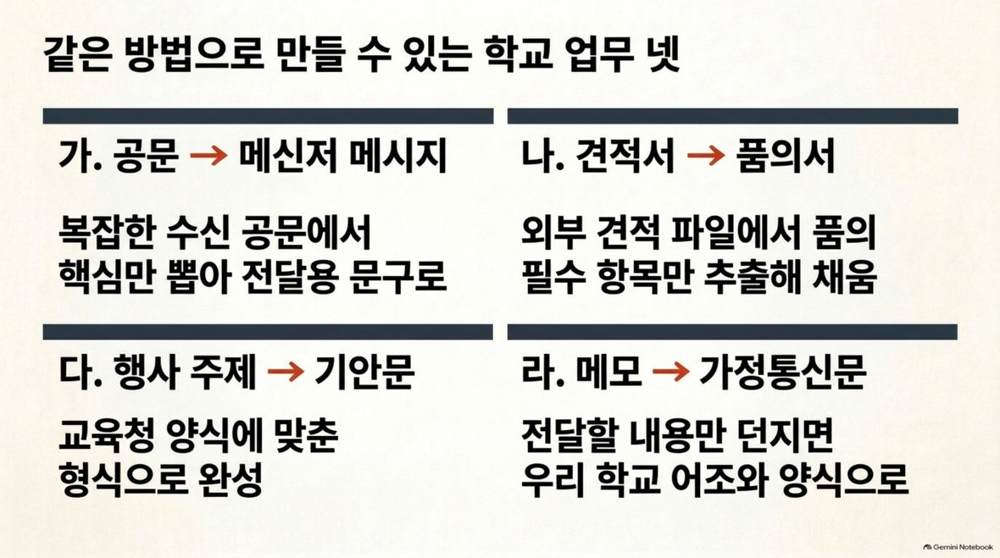
“이번 주에 두 번 이상 하신 일이 뭐예요?”를 꼭 물어보세요. 한 분이라도 대답하시면 그분 사례로 오늘 내내 얘기할 수 있습니다. 아무도 대답 안 하시면 “저는 공문을 메시지로 바꾸는 일이요”라고 먼저 말씀하시면 그다음부터 나옵니다.
“무료 계정에서도 됩니다”를 크게 말씀하세요. 이 한마디에 나머지 시간의 집중도가 달라집니다.
스킬 — 한 번 가르쳐두기
오늘 전원이 하나씩 만듭니다. 무료 계정에서도 됩니다.
먼저 보여드립니다 — 1분이면 끝납니다
- 공문 파일 하나를 대화창에 끌어다 놓습니다.
- 그리고 한 줄만 칩니다.
- 클로드가 몇 가지 되묻습니다. 눌러서 고르기만 하면 됩니다.
- 끝입니다.
공문 안내 메시지로 바꿔 줘.
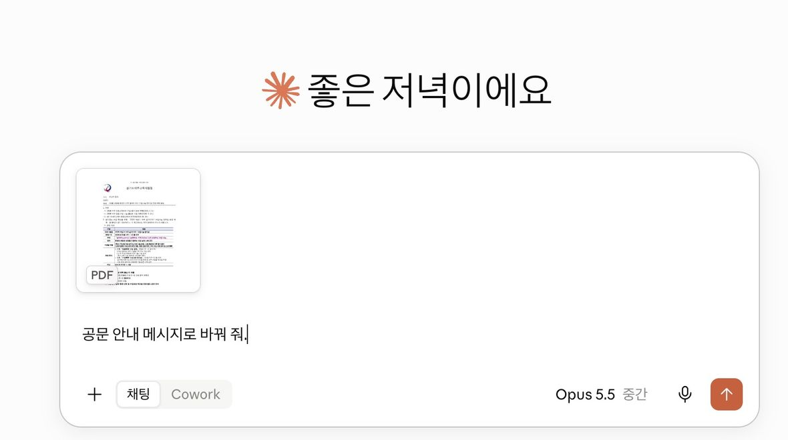
공문을 메시지로. 이만큼만 쳐도 켜집니다.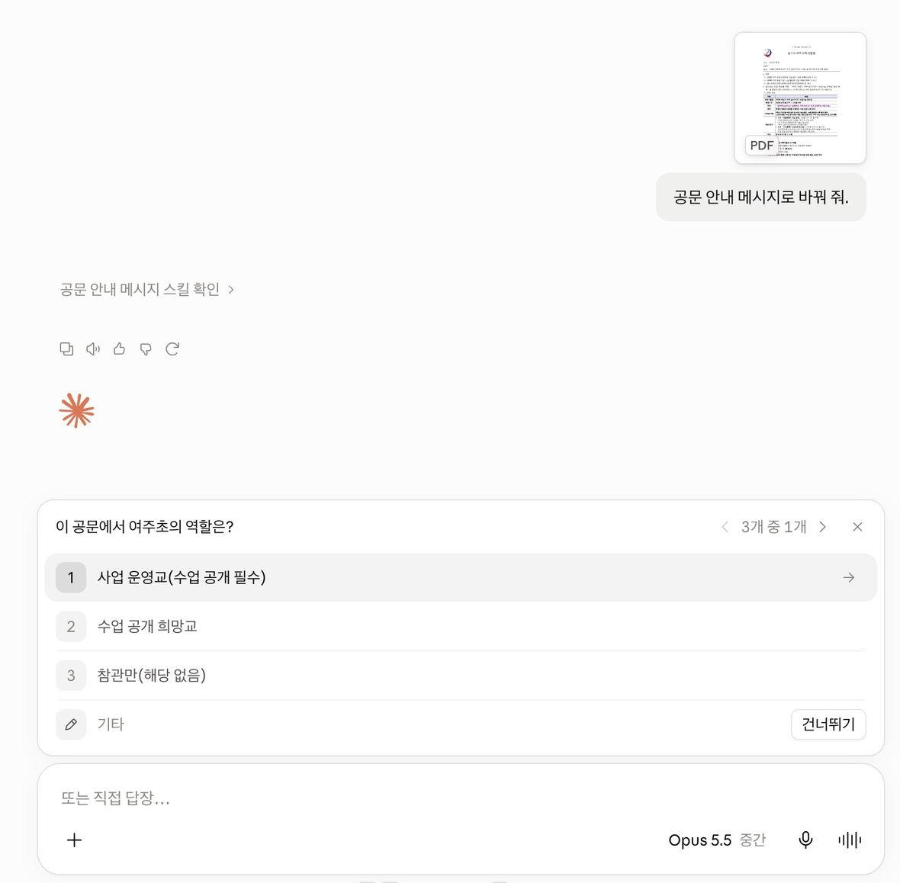
그래서 스킬이 무엇인가
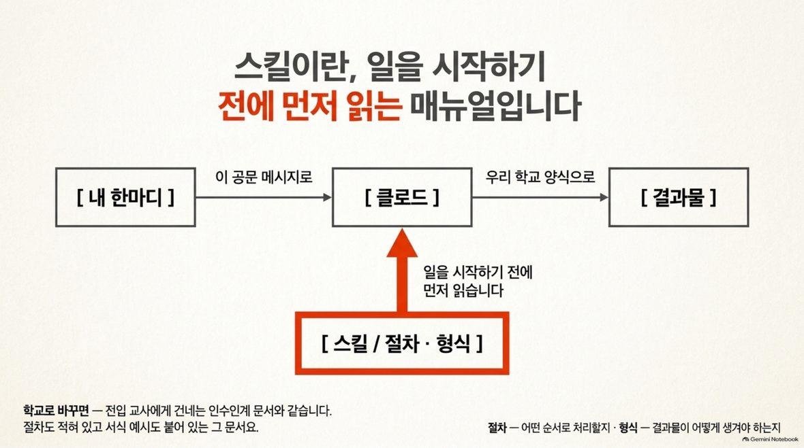
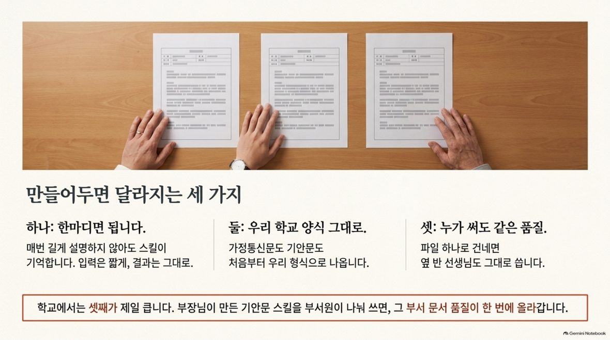
만드는 법은 넷
말로 시키기
남이 만든 파일
받아 올리기
화면을 녹화해서
만들기
직접 작성해
올리기
만듭니다 — 한 줄에 한 쌍
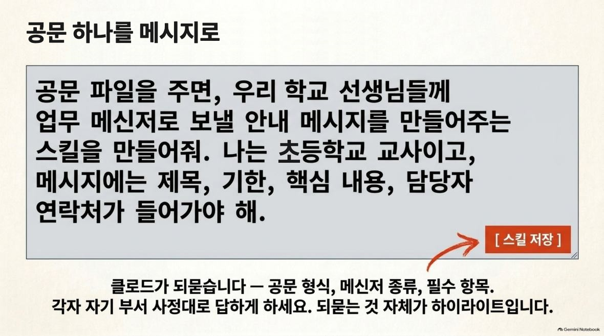
공문 파일을 주면, 우리 학교 선생님들께 업무 메신저로 보낼 안내 메시지를 만들어주는 스킬을 만들어 줘. 나는 초등학교 교사이고, 메시지에는 제목, 기한, 핵심 내용, 담당자 연락처가 들어가야 해.
스킬은 한 줄이면 만들어집니다. 다만 그냥 시키면 내 말투가 안 들어간 껍데기가 나옵니다. 그래서 공문과 그 결과 메시지를 한 쌍으로 같이 줍니다.
메시지만 주면 클로드는 “이 선생님은 이렇게 쓴다”까지만 배웁니다. 정작 필요한 건 “공문의 무엇을 버리고 무엇을 어떻게 바꾸는가”인데, 그건 바뀌기 전과 후를 나란히 줘야만 배웁니다.
아래는 우리 학교에 온 공문과, 그 공문을 받아 내가 교직원께 실제로 보낸 메시지야.
이렇게 공문을 받아 메시지로 바꾸는 일을 앞으로 반복해서 쓸 수 있게 스킬로 만들어 줘.
만들기 전에 둘을 나란히 비교해서, 내가 어떻게 바꿨는지 먼저 파악해 줘.
- 공문에서 무엇을 버렸는지
- 공문의 무엇을 어떻게 바꿔 썼는지
- 공문에 없는데 메시지에는 있는 것은 무엇인지
이건 내가 학교 사정을 알아서 채운 부분이야.
앞으로 여기는 지어내지 말고 [확인 필요]로 남겨야 한다는 뜻이야.
스킬 이름과 설명에 '공문', '메시지', '안내'라는 말을 넣어 줘.
아래 셋 중 어느 말이 나와도 이 스킬이 켜지게 해 줘.
- 공문 안내 메시지로 바꿔 줘
- 공문을 메시지로
- 선생님들께 보낼 안내 써 줘
모자란 정보가 있으면 나한테 물어봐.
[받은 공문]
제목: [출장] 2026 하반기 여주 같이!가치! 수업나눔 한마당 참석자 명단 알림
1. 관련
가. 2026 여주 초등교육과정-수업-평가 운영 계획(2026. 2. 6.)
나. 2026 여주 중등 수업 나눔 활성화 지원 계획(2026. 3. 11.)
다. 경기도여주교육지원청 교육과-28256(2026. 9. 9.)
2. 깊이있는 수업 확산을 위한 「2026 하반기 여주 같이!가치! 수업나눔 한마당」
참석자 명단을 붙임과 같이 안내하오니, 해당 교사가 수업 참관 및 사후 협의에
참석할 수 있도록 협조하여 주시기 바랍니다.
가. 건명: 학생과 함께 만드는 배움똑똑 수업 공개 참관 및 사후 협의 참석
나. 기간: 2026. 9. 16.(수) ~ 11. 11.(수)
다. 수업 공개 일정: [붙임1] 참조
라. 참석자 명단: [붙임2] 참조
마. 협조사항
· 참석교사 — 안내된 전체 일정(수업 참관 및 사후 협의)에 참석
교내 주차 공간이 협소하므로 가급적 카풀 등 차량을 함께 이용하여 방문
· 수업 공개교 — [붙임3] 양식을 활용하여 수업지도안·수업참관록·등록부 비치
[붙임4] 수업 공개 안내문을 참관자가 확인하기 쉬운 장소에 부착
담임장학과 연계하여 수업 공개 및 참관 교원과의 사후 협의회 운영
운영 종료 후 스캔본 교육지원청 제출(K-에듀파인)
붙임 1. 수업 공개 일정 1부. 2. 참석자 명단 1부.
3. 지도안·참관록·등록부 1부. 4. 수업 공개 안내문 1부. 끝.
여주초 교직원분들께 안내드립니다.
오늘 동료장학(관내 수업공개) 및 교육성과 보고회가 있습니다.
동료장학을 관내 수업 공개로 실시합니다.
*3교시- 특수학급, 복합특수 수업 공개
*4교시- 1~2학년, 전담 및 비교과 교사 수업 공개
*5교시- 3~4학년 수업 공개
*6교시- 5~6학년 수업 공개
6교시 이후 14:30부터 시청각실에서 사후 협의회를 합니다.
* 참석 대상: 전 교원, 관내 참관 신청자
사후 협의회에서는
AI·디지털 활용 선도학교/ 경기 미래형 과학실/ Why Up 선도학교
운영 성과 보고 및 수업실천 사례 나눔을 합니다.
끝이 보이니 조금만 더 기운내주시고요~
공개수업도 파이팅!! *^^*
이따가 사후 협의회 때 뵙겠습니다~♡
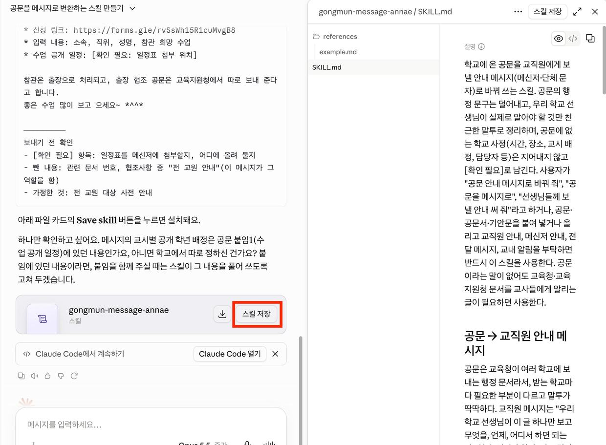
저장하고 바로 넘어가지 마시고, 한 줄만 더 쳐 보세요. 클로드가 무엇을 배웠는지 눈으로 보실 수 있습니다.
방금 만든 스킬에서 내 작업 규칙을 '버린 것 / 바꾼 것 / 채운 것' 세 가지로 정리해서 보여 줘.
이렇게 나옵니다 — 실제 화면
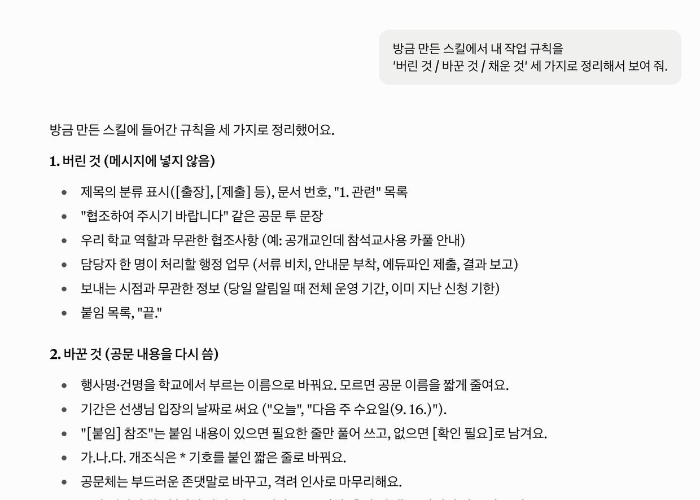
정리하면 이렇습니다
| 구분 | 무엇을 |
|---|---|
| 버린 것 | 관련 근거 3줄 · 건명 · 붙임 목록 · K-에듀파인 제출 절차 |
| 바꾼 것 | “2026. 9. 16.(수) ~ 11. 11.(수)” → “오늘” “협조하여 주시기 바랍니다” → “조금만 더 기운내주시고요~” “동료장학” → “동료장학(관내 수업공개)” — 용어를 괄호로 풀어 줌 |
| 채운 것 | 교시별 공개 일정 · 14:30 시청각실 · 선도학교 성과 보고 공문에 없습니다. 학교가 넣은 것입니다 |
[확인 필요]로 남깁니다.진짜 도는지 확인합니다
저장만 하고 끝내면 정말 되는지 모릅니다. 한 번만 돌려 보고 넘어갑니다.
- 새 대화창을 엽니다. 지금까지 쓰던 창을 닫으셔야 합니다.
- 위에서 받은 확인용 공문(교육과-11731)을 끌어다 놓습니다.
- 아래 한 줄만 칩니다.
공문 안내 메시지로 바꿔 줘.
공문을 메시지로. 도 됩니다. 아까 셋을 다 등록해 뒀으니 어느 걸 치셔도 켜집니다.이렇게 나옵니다 — 실제 결과
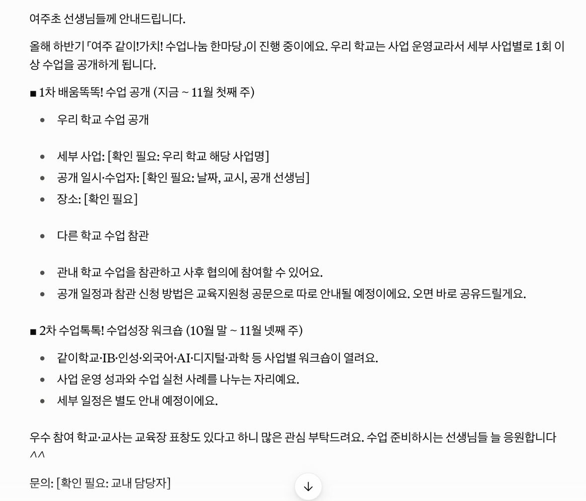
[확인 필요]가 다섯 군데 있습니다.세부 사업명, 공개 일시·수업자, 장소, 교내 담당자. 공문에 없는 것들입니다. 그래서 지어내지 않고 자리만 비워 뒀습니다. 선생님이 채워 넣으시면 됩니다.
[확인 필요]로 남겨”라고 하신 그 한 줄이 지금 그대로 지켜진 것입니다.맨 앞에서 제가 보여드린 그 장면이, 이제 선생님 화면에서 일어납니다.
공문이 하루에 열 건 와도 같습니다. 올리고, 한 줄.
손보고, 나눠 갑니다
따로 편집기를 열 필요가 없습니다. 말로 고칩니다.
이 스킬에서 담당 부서를 '연구부'로 바꿔 줘. 그리고 스킬을 수정해 줘.
이렇게 나옵니다 — 실제 화면
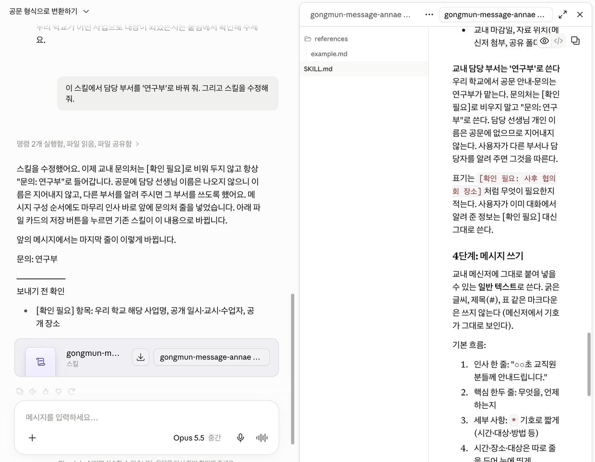
쓰는 법은 둘 — 만들어두고 잊어버리셔도 됩니다
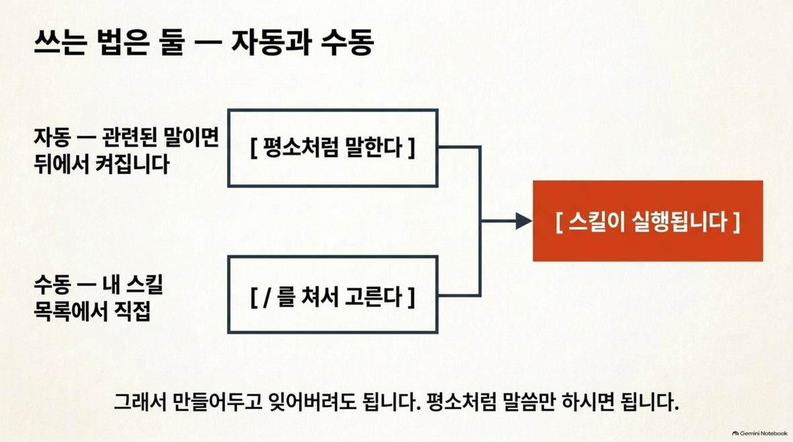
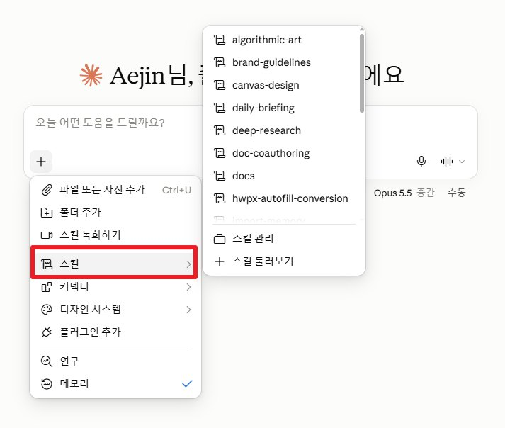
되나요?
한글(hwp)은 기본으로 없습니다. 한글용 스킬을 따로 올려야 합니다.
뭐가 달라요?
나왔는데요
만들어요?
공문 스킬은 직접 만드셨습니다. 이번 것은 받아서 올립니다 — 슬라이드의 ‘나. 남이 만든 파일 받아 올리기’가 이것입니다.
올립니다 — 압축은 풀지 않습니다
- 위의 ⬇ 한글 스킬 받기를 누릅니다. 4KB짜리 작은 파일입니다.
- 압축을 풀지 마세요. 받은 zip 파일을 그대로 씁니다.
- 설정 → 사용자 지정(Customize) → 스킬로 들어갑니다.
- 오른쪽 위 ＋ 추가 → 스킬 업로드.
- 받은 zip 파일을 고릅니다.
- 업로드를 누르면 끝입니다.
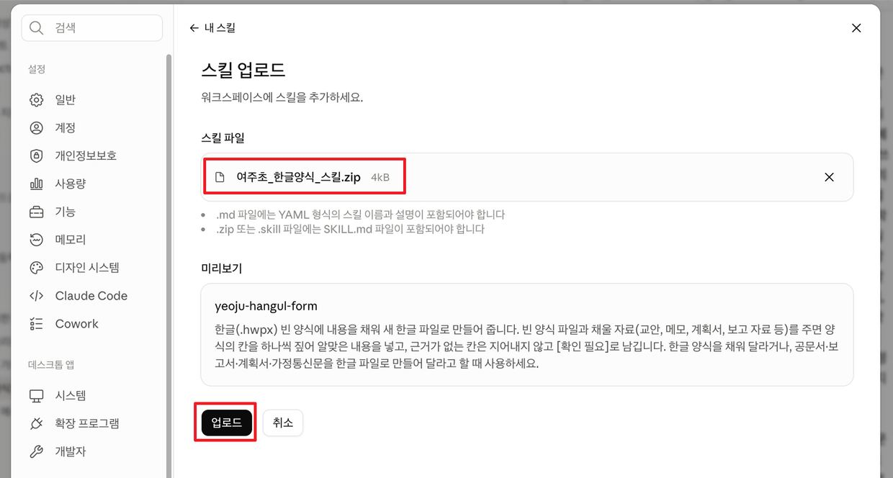
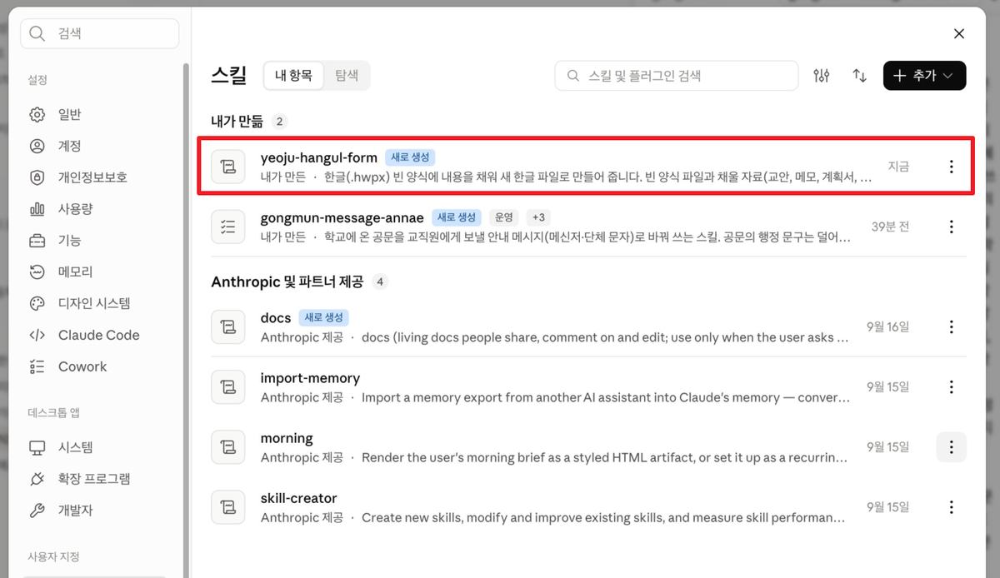
써봅니다 — 한글 파일이 나옵니다
클로드에 원래 들어 있는 건 워드 · 엑셀 · PPT · PDF뿐입니다. 한글은 없습니다. 우리나라에서만 쓰는 형식이라서요.
그런데 스킬 하나를 올렸더니 한글 파일이 나옵니다. 그게 지금 보실 장면입니다.
지난번 안내장을 이번 행사로 바꾸는 일을 해 봅니다. 행사 때마다 하시는 그 일이요.
- 새 대화창을 엽니다.
- 위에서 받은 안내장(.hwpx)을 끌어다 놓습니다. 5학년 연극 관람 · 서대문형무소 안내장입니다
- 아래를 붙여넣습니다. 교무부에서 받은 메모 그대로입니다 — 문장이 아니라 항목만 적혀 있습니다
올린 안내장을 아래 행사로 바꿔 줘.
4학년 가을 현장체험학습 · 국립과천과학관
11월 6일(금) 9시 출발, 15시쯤 학교 도착
대상 4학년 전체 · 비용 없음
(입장료·버스비는 적정규모학교 육성 예산, 보험료는 학교 예산)
점심 도시락 각자 · 신청서는 10월 30일(금)까지 담임에게
준비물: 간편복, 운동화, 물, 간식 조금, 우산, 개인 약, 이름표
일정: 09:00 출발 / 10:30 도착·안전교육 / 10:40 상설전시관
12:00 점심 / 13:00 천체투영관 / 14:00 출발 / 15:00 도착
- 표의 칸과 줄 수는 그대로 두고 글자만 바꿔 줘
- 5학년 연극·서대문형무소 내용이 한 군데도 남지 않게 다 바꿔 줘
- 절취선 아래 신청서도 4학년에 맞게 바꿔 줘
- 내가 안 준 내용은 지어내지 말고 [확인 필요]로 남겨 줘
- 새 한글 파일로 만들어 줘. 올린 파일은 건드리지 마
모르는 건 물어봐.
안 열리면 — “내용을 화면에 보여 줘” 또는 “워드 파일로 만들어 줘”라고 하시면 됩니다. 한글에 붙여넣으시면 되니까요. 스킬 안에 그 대안도 적혀 있어서 클로드가 알아서 그렇게 합니다.
Ctrl+F로 “서대문”과 “연극”을 찾아 보세요. 하나도 안 나오면 성공입니다. 이 확인이 제일 중요합니다 — 지난 행사 문구가 한 줄 남는 게 가장 흔한 실수입니다. 남아 있으면 그 줄만 다시 시키시면 됩니다.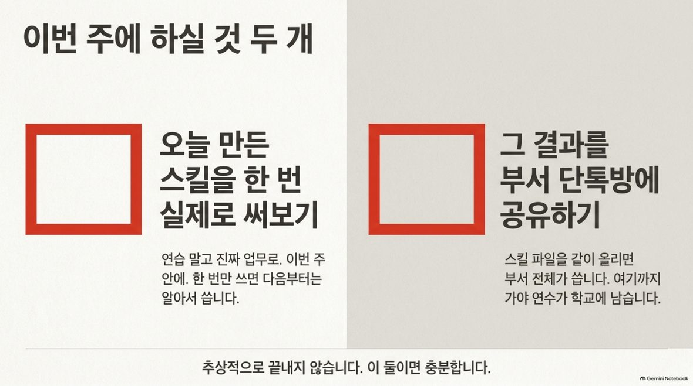
다음 주에 딱 하나만
이번 주에 두 번 이상 하신 일을 하나 골라, 클로드와 한 번 제대로 해 보고 끝에 이 한 줄을 붙이세요.
방금 한 작업 방식과 결과물 형식이 마음에 들어. 앞으로 반복해서 쓸 수 있게 스킬로 만들어 줘.
스킬까지 써보시면 글은 잘 나옵니다. 그런데 파일 정리나 저장은 결국 내가 하네 싶어집니다.
채팅은 훌륭한 동료지만 손이 없습니다. 그 손을 붙인 것이 코워크입니다 — 다음 탭에서 봅니다.
시작 전에 준비하실 것 — 맨 앞 시연용입니다. 강사 계정에 공문 스킬이 미리 올라가 있어야 합니다(가져가실 것 탭의 스킬 3종 중 하나). 그리고 공문 PDF 한 장을 바탕화면에 꺼내 두세요. 시연은 30초를 넘기지 마세요. 여기서 설명을 시작하면 만드는 시간이 없어집니다. “이걸 지금부터 만듭니다” 한마디로 넘기시면 됩니다.
2번에서 클로드가 되물을 때 기다려 주세요. 선생님들이 당황하십니다. “각자 학교 사정대로 답하시면 됩니다”라고 미리 말씀해 두세요.
‘스킬 저장’ 버튼을 안 누르는 분이 반드시 나옵니다. 2번 끝에 한 번 더 확인하세요 — “저장 누르셨어요?”
2-1은 시간이 빠듯하면 건너뛰셔도 됩니다. 다만 하시면 “채운 것” 줄을 소리 내어 읽어 주세요 — 교시별 일정, 14:30 시청각실, 선도학교 성과 보고는 공문에 없습니다. “이건 선생님이 아셔서 넣으신 겁니다. AI는 이걸 지어내면 안 됩니다.” 이 한마디가 오늘 안전 수칙의 전부입니다.
3번이 오늘의 하이라이트입니다. 여기서 “오!” 소리가 납니다. 새 대화창을 꼭 열게 하세요. 같은 창에서 하면 스킬이 켜진 건지 알 수가 없습니다. 돌리기 전에 한 번 물어보세요 — “아까 몇 번 주고받으셨죠?” 그리고 한 줄로 끝나는 걸 보여주시면 됩니다.
5번에서 내려받기를 꼭 시키세요. 연수용 계정이 없어진다는 걸 말씀하셔야 움직이십니다.
6번은 1분입니다. “압축 풀지 마세요”를 두 번 말씀하세요. 여기서 반드시 푸시는 분이 나옵니다.
7번이 두 번째 하이라이트입니다. 한글 파일이 나오는 순간이요. 돌리기 전에 한마디 얹으세요 — “클로드에 한글은 원래 없습니다. 스킬 하나 올렸더니 나옵니다.”
만들어진 파일을 한글에서 열게 하세요. 화면에 파일 이름만 뜨고 끝나면 반이 안 믿으십니다. 한 분이라도 열어서 보여주시면 됩니다.
시간이 밀리면 7번만 강사 시연으로 돌리세요. 6번(올리기)은 각자 하셔야 집에 가서 쓰십니다.
코워크 — 내 자리에 앉은 동료
채팅은 물어보면 답하고, 코워크는 시키면 해냅니다.
챗봇과 에이전트
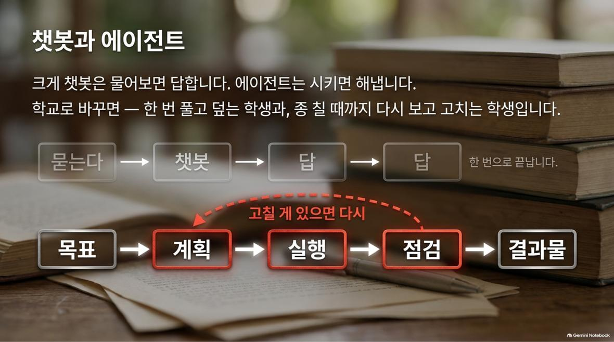
채팅과 코워크는 무엇이 다른가
지금까지 쓰신 건 아는 게 많은 동료에게 물어보고 받아 적는 것이었습니다. 코워크는 그 동료가 제 자리에 앉아 직접 파일을 열고 일해주는 것입니다.
| 구분 | 클로드 채팅 | 클로드 코워크 |
|---|---|---|
| 플랜 | 무료 | Pro 이상 · 데스크탑 앱 |
| 방식 | 입력 → 출력 (한 번) | 계획 → 실행 → 점검 (반복) |
| 파일 | 한 대화에 20개까지 · 파일당 500MB | 지정한 폴더에 직접 접근 · 제한 없음 |
| 결과물 | 채팅창 안에 남습니다 | 내 폴더에 실제 파일로 저장됩니다 |
| 맞는 일 | 번역 · 요약 · 질의응답 등 단발 | 파일 대량 정리 · 여러 단계 자동 처리 |
무료에서 코워크가 열린 것은 아닙니다. 폴더 연결은 여전히 Pro 이상입니다. 위 표는 그대로 맞습니다.
500MB가 어느 정도인가 — 그리고 진짜 걸리는 건 개수입니다
간단한 건 채팅에서 하세요. 여러 단계를 한 번에 끝내야 할 때만 코워크로 가시면 됩니다. 오늘 연수용 계정은 여러 분이 같이 쓰니 특히 그렇습니다.
시작 전 준비 세 가지
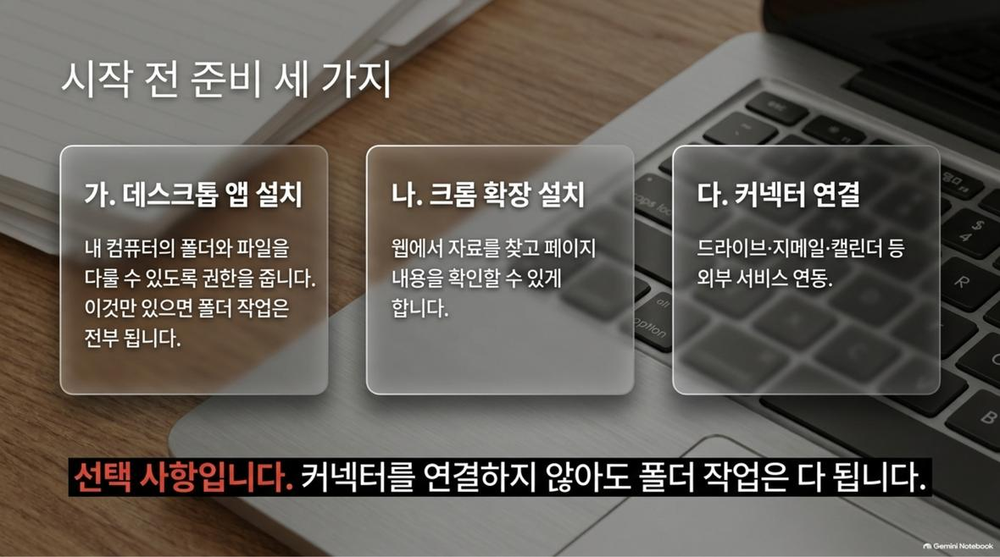
이것만 있으면 폴더 작업은 전부 됩니다
유료 플랜 전용 ⬇ 크롬에서 설치
선택 사항입니다
다. 커넥터 연결하는 법 — 오늘은 안 하셔도 됩니다
- 대화창 왼쪽 아래 ＋를 누릅니다.
- 커넥터에 마우스를 올립니다.
- 쓰실 것만 켜기로 바꿉니다 — 드라이브 · 지메일 · 캘린더.
- 구글 로그인 화면이 뜹니다. 학교 계정으로 허용하시면 끝입니다.
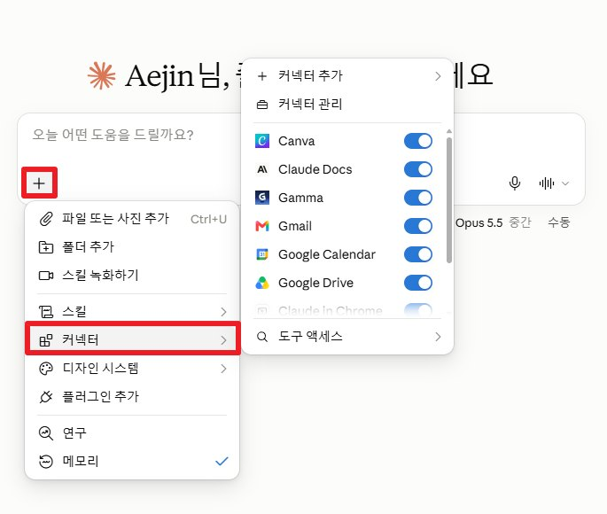
학교 계정은 관리자가 막아 둘 수 있습니다. 연결이 안 되면 그 때문이니, 개인 구글 계정으로 해 보시거나 넘어가시면 됩니다.
쓰는 순서는 셋
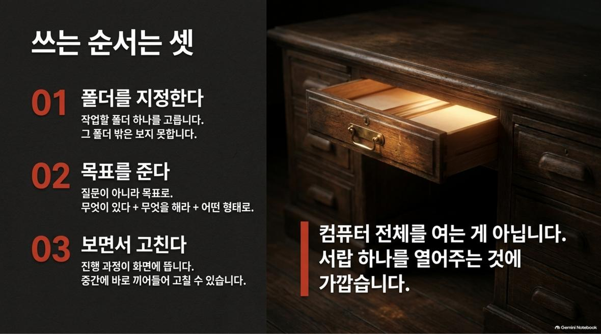
작업할 폴더 하나를 고릅니다. 그 폴더 밖은 보지 못합니다.
질문이 아니라 목표로. 무엇이 있다 + 무엇을 해라 + 어떤 형태로.
진행 과정이 화면에 뜹니다. 중간에 바로 끼어들어 고칠 수 있습니다.
컴퓨터 전체를 여는 게 아닙니다. 서랍 하나를 열어주는 것에 가깝습니다.
지정한 폴더 밖은 보지도 못합니다. 그래서 실제로 쓰실 때도 바탕화면이나 내 문서를 통째로 맡기지 마시고, 그 일에 필요한 폴더 하나만 맡기세요.
물어보고 할까, 알아서 할까
입력창 오른쪽 끝에 수동 / 자동이 있습니다. 클로드가 무언가 하기 전에 물어볼지를 정하는 자리입니다.
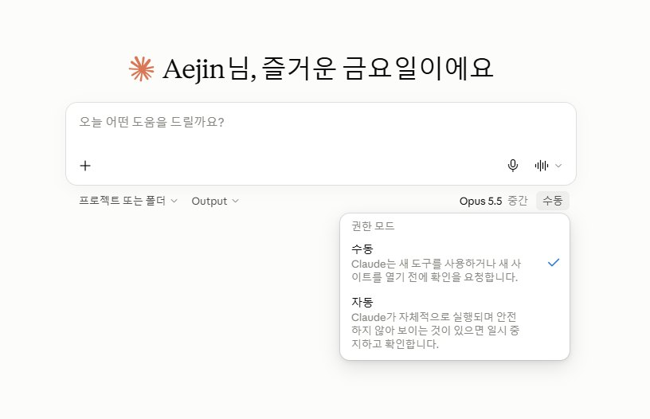
오늘은 이것
먼저 몸을 풉니다 — 폴더 하나 맡겨 보기
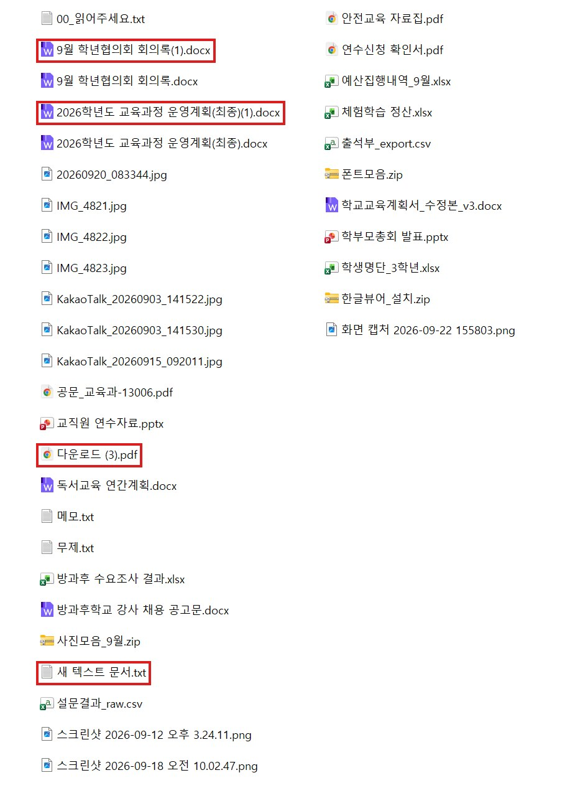
모두가 가지고 있는 그 폴더입니다. 프롬프트 한 줄에 결과 하나라 실패할 구석이 거의 없습니다. 여기서 폴더 연결이 되는 걸 확인하고 다음으로 갑니다.
- 위에서 받은 폴더를 압축 풀어 바탕화면에 둡니다.
- 풀면 안에 ‘다운로드’ 폴더가 들어 있습니다. 연결할 것은 그 ‘다운로드’ 폴더입니다. 바깥 폴더를 고르면 안이 비어 보입니다
- 데스크탑 앱 입력창 아래에 Cowork(협업)이 보이면 누릅니다. 안 보이면 그냥 다음으로 — 요즘 이 선택이 없어진 계정이 있습니다
- ＋ 또는 폴더 추가로 그 폴더를 고릅니다.
- 허용을 묻는 창이 뜨면 항상 허용을 누릅니다.
- 아래를 붙여넣습니다.
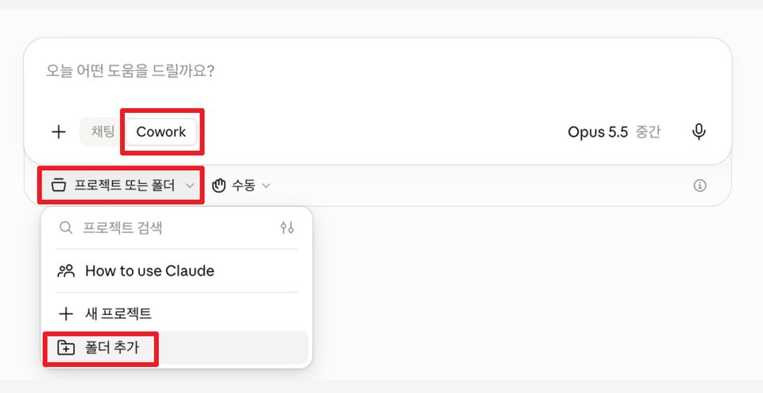
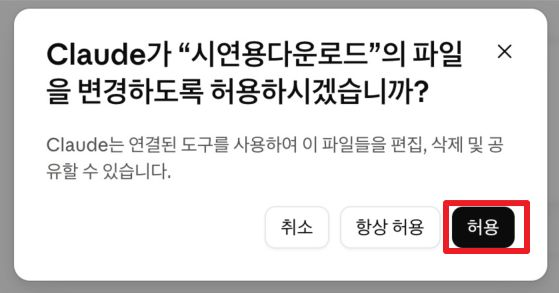
이 다운로드 폴더 정리해줘.
이렇게 나옵니다
회의록.docx
회의록(최종)으로 바꾸고, 이전 버전을 삭제후보로 보냈습니다.보통은 반대로 합니다. 이름에 (1)이 붙으면 중복이라 보고 지우죠. 그랬으면 최종본이 날아갔습니다.
(최종)(1).docx
공문_현장체험학습 안전교육 실시 안내.pdf이름만 봐서는 아무도 모르는 파일입니다. 공문 제목을 읽고 이름을 짓고, 공문 폴더에 넣었습니다.
2026-09-24 학년협의 메모.txt안에 적힌 “9/24 학년협의 메모”를 읽고 날짜까지 붙였습니다. 그리고 회의록과 같은 ‘회의·협의’ 폴더에 넣었습니다. 서로 관련 있는 걸 알아본 겁니다.
실제 화면 보기 — 정리된 폴더와 클로드의 설명
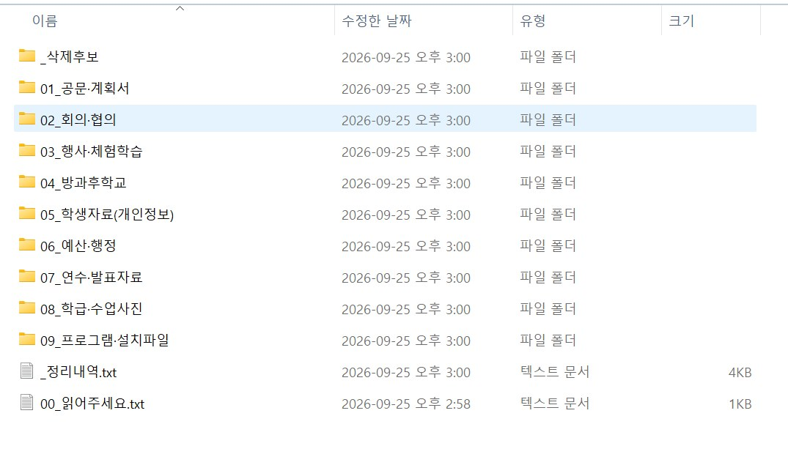
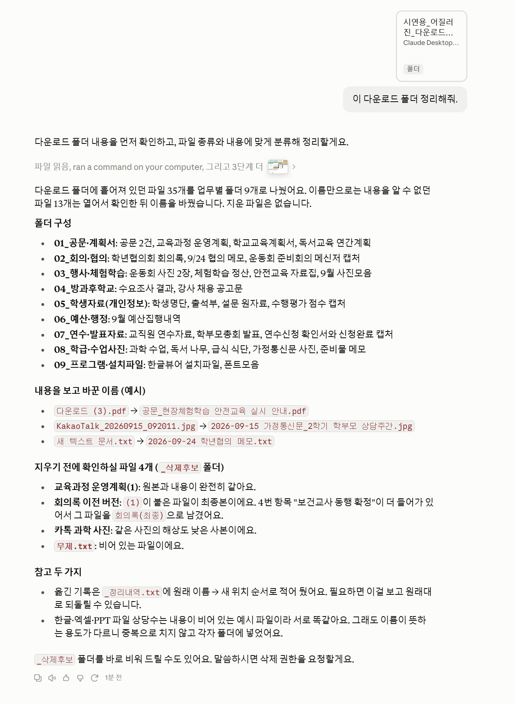
① 학생 자료를 따로 묶었습니다 — 학생명단·출석부·성적 입력 캡처를 ‘학생자료(개인정보)’ 폴더에 모았습니다. 시키지 않았습니다.
② 되돌릴 길을 남겼습니다 — 무엇을 어디로 옮겼는지
_정리내역.txt에 적어 뒀습니다. “방금 거 되돌려 줘” 한마디면 원래대로 돌아갑니다.클로드가 이름만 보고 나눴을 수 있습니다. 파일을 열어 보지 않으면 다운로드 (3).pdf가 뭔지, 회의록 (1)이 최종본인지 알 수 없습니다. 한 줄만 더 보내세요.
이름이 애매한 건 열어 보고 다시 판단해 줘. (1)이 붙은 건 진짜 같은 파일인지 내용도 비교해 줘.
오늘의 본 실습 — 안 낸 사람을 찾아냅니다
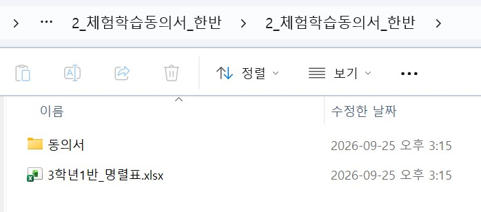
IMG_2834는 일부러 흐리게 찍은 사진입니다 — 오른쪽이 크게 연 모습입니다. 클로드가 이 한 장을 어떻게 처리하는지 보세요.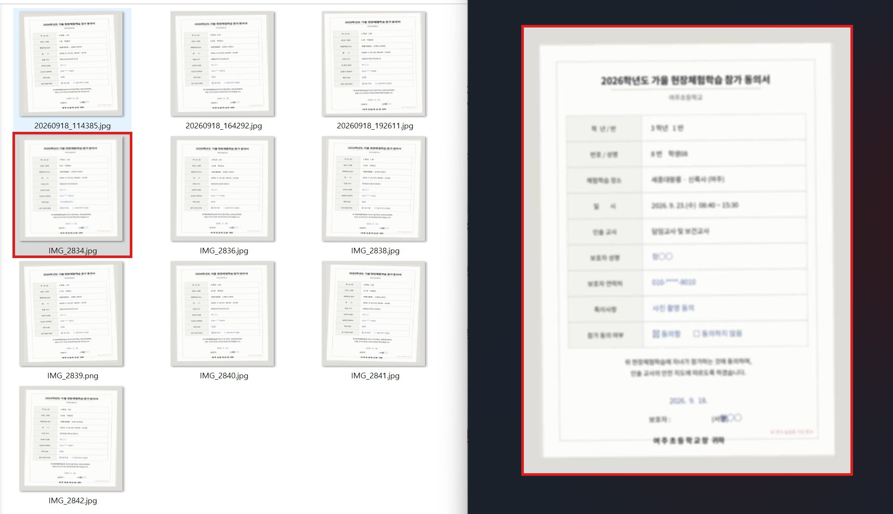
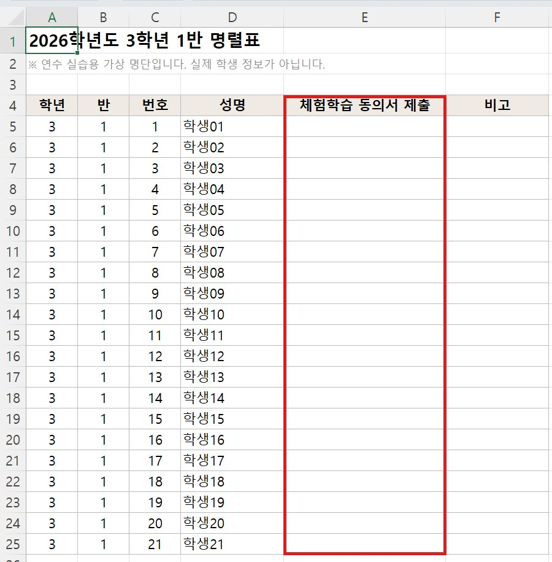
동의서가 카톡 사진, 스캔본, 폰 촬영본으로 뒤섞여 들어왔습니다. 파일 이름은 전부 숫자고요. 명렬표를 옆에 놓고 하나씩 열어 확인하시던 그 일입니다.
- 위에서 받은 폴더를 압축 풀어 바탕화면에 둡니다.
- 풀면 안에 ‘2_체험학습동의서_한반’ 폴더가 있습니다. 연결할 것은 그 폴더입니다. 안에 명렬표 엑셀과 ‘동의서’ 폴더가 같이 보여야 합니다
- 폴더 추가로 그 폴더를 고릅니다. 몸풀기에서 하신 것과 같습니다 — 20초면 됩니다
- 아래를 붙여넣습니다. 올릴 파일은 없습니다.
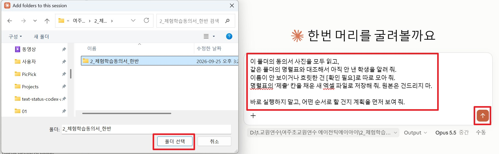
이 폴더의 동의서 사진을 모두 읽고, 같은 폴더의 명렬표와 대조해서 아직 안 낸 학생을 알려 줘. 이름이 안 보이거나 흐릿한 건 [확인 필요]로 따로 모아 줘. 명렬표의 '제출' 칸을 채운 새 엑셀 파일로 저장해 줘. 원본은 건드리지 마. 바로 실행하지 말고, 어떤 순서로 할 건지 계획을 먼저 보여 줘.
대화 과정 보기 — 계획부터 결과까지
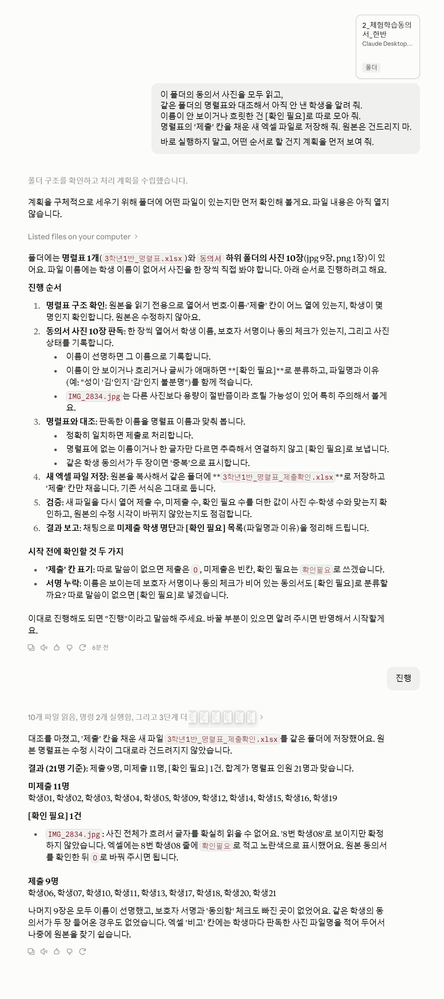
이렇게 나옵니다
3학년1반_명렬표_제출확인.xlsx가 폴더에 생겼습니다. 원본 명렬표는 그대로입니다.3학년1반_명렬표_제출확인.xlsx가 생겼습니다(빨간 칸). 원본은 수정 시각 3:15 그대로 — 건드리지 않았습니다.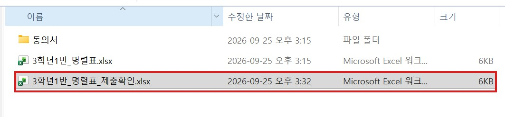
원본을 고칠지, 새 파일을 만들지는 클로드가 계획 단계에서 정합니다. 이번엔 프롬프트에 “새 엑셀 파일로 저장해 줘. 원본은 건드리지 마”라고 적어서 새 파일이 생겼습니다. 이 줄이 없으면 원본 명렬표에 바로 써 넣는 계획이 나올 수도 있습니다. 새 파일 이름도 사람마다 다르게 나옵니다.
그래서 계획을 먼저 보라고 한 겁니다. 계획에 “원본을 수정해서…”가 보이면, 실행하기 전에 “원본은 두고 새 파일로 해 줘” 한마디로 바로잡으시면 됩니다. 실행한 뒤에 되돌리는 것보다 훨씬 쉽습니다.
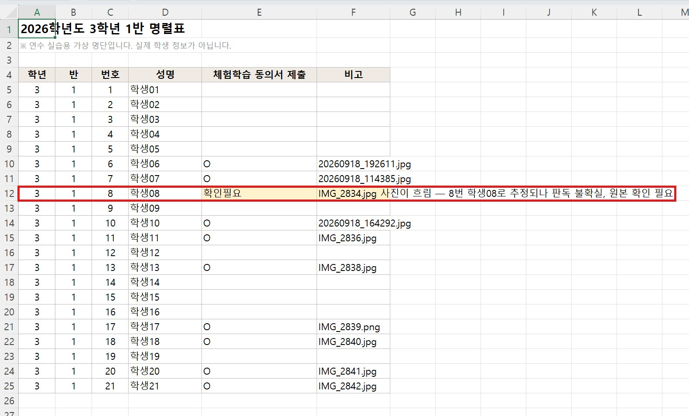
IMG_2834.jpg
이게 오늘 가장 중요한 장면입니다. 그럴듯하게 “제출”로 채웠으면 아무도 몰랐을 겁니다.
강사용 정답 — 파일과 학생 짝
낸 학생 열 명 — 6 · 7 · 8 · 10 · 11 · 13 · 17 · 18 · 20 · 21번. 안 낸 학생 열한 명 — 1 · 2 · 3 · 4 · 5 · 9 · 12 · 14 · 15 · 16 · 19번.
그중 8번(IMG_2834)이 일부러 흐린 사진입니다. 그래서 “제출 9 + 확인 필요 1”로 나오면 가장 잘한 것이고, 8번을 확신해서 “제출 10”으로 적었으면 지어낸 것입니다. 어느 쪽인지 옆 선생님과 비교해 보세요.
보여드립니다 — 사진 뭉치가 활동별 폴더로
여기는 따라 하지 않으셔도 됩니다. 화면으로 보시기만 하세요. 교안에 남아 있으니 학교에서 해 보시면 됩니다.
체험학습 다녀오면 폰에 사진이 수십 장입니다. 파일 이름은 전부 IMG_번호라, 앨범을 만들거나 학급 누리집에 올리려면 하나씩 열어 보고 나누는 일이 남습니다.
이 폴더의 사진을 모두 열어보고 무엇을 찍은 것인지 파악해 줘. 그런 다음 활동별로 폴더를 만들어서 나누고, 파일 이름을 [날짜_활동_번호] 형식으로 바꿔 줘. - 체험학습 날짜는 2026년 9월 18일이야. 날짜는 20260918로 써 - 번호는 01, 02처럼 두 자리로 - 흔들리거나 잘못 찍힌 사진은 '버릴것' 폴더에 모아 줘 - 지우지는 말 것 - 바꾸기 전에 어떻게 바꿀 건지 표로 먼저 보여 줘
결과를 바꾸는 세 마디
코워크는 계획 → 실행 → 점검으로 움직입니다. 그 세 자리에 한마디씩 얹으면 결과가 달라집니다. 셋을 다 쓰실 필요는 없습니다.
바로 실행하지 말고, 어떤 순서로 할 건지 계획을 먼저 보여 줘. 내가 확인하면 그때 진행해 줘.
클로드가 자기를 여럿으로 나눠 동시에 일하게 하는 방법입니다. 스무 장을 한 장씩 차례로 읽는 대신, 셋으로 나눠 동시에 읽고 마지막에 한 명이 모아서 정리합니다.
자료를 셋으로 나눠서 서브 에이전트 세 개로 병렬로 처리해 줘.
원본과 하나씩 대조해서 검증을 한 번 더 해 줘. 숫자와 날짜, 이름이 원본과 다른 곳이 있으면 알려 줘.
시간이 남으면 — 더 보여드릴 수 있는 것들
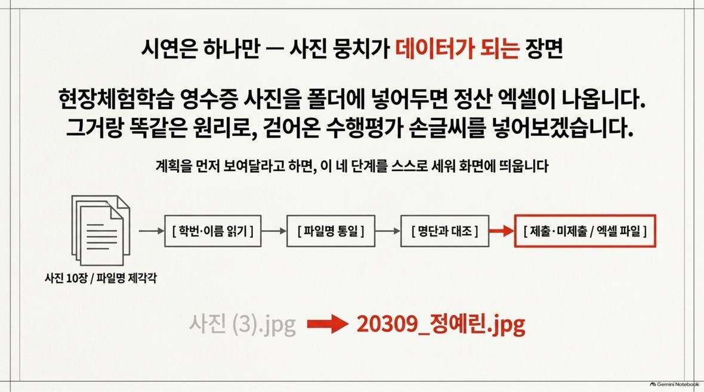
여기는 건너뛰어도 됩니다. 프롬프트는 교안에 남으니 학교에서 보시면 됩니다. 셋 다 따라 하지 마시고 보기만 하세요.
이 폴더의 영수증 사진을 모두 읽고 날짜 / 상호 / 품목 / 금액으로 표를 만들어 줘. 읽기 어려운 건 [확인 필요]로 표시하고, 합계도 내 줘. 엑셀 파일로 저장해 줘.
[확인 필요]로 남기는지 보세요. 오늘 내내 확인할 지점입니다.수행평가 결과물을 찍어 두면 파일 이름은 전부 IMG_3412입니다. 나중에 찾으려면 하나씩 열어봐야 합니다.
이 폴더의 사진을 모두 읽고, 사진에 적힌 학생 이름을 찾아 파일 이름을 [학년반_번호_이름] 형식으로 바꿔 줘. - 이름이 안 보이거나 흐릿한 건 바꾸지 말고 '확인필요' 폴더에 따로 모아 줘 - 원본은 지우지 말 것 - 바꾸기 전에 어떻게 바꿀 건지 표로 먼저 보여 줘
IMG_3412.jpg 가 30201_김서연.jpg 로 촤르륵 바뀝니다.담당 선생님이라면 아시는 그 일입니다. 실적 엑셀을 하나씩 열어 숫자를 옮겨 적고, 양식 표에 채우고, 마지막에 합계가 맞나 계산기로 다시 두드리는 일이요.
이 폴더 보고 2026년 AI·디지털 활용 선도학교 운영 계획서를 써 줘. 01_학교제공_양식의 계획서 양식을 그대로 쓰고, 02_작년계획서의 구성과 말투를 따라 줘. 03_가상자료_학교현황의 숫자를 근거로 삼아 줘. - 자료에 없는 숫자는 지어내지 말고 [확인 필요]로 남겨 줘 - 예산은 예산편성지침 요약의 기준을 넘지 않게 - 새 한글 파일로 '결과물' 폴더에 저장해 줘. 원본은 건드리지 마 바로 하지 말고, 어떤 순서로 할 건지 계획을 먼저 보여 줘.
같은 폴더에서 이번엔 운영보고서 및 정산서를 써 줘. 04_가상자료_운영실적의 엑셀을 전부 읽고 실적 표를 채워 줘. 예산집행내역의 합계가 정산서 총계와 맞는지 확인해서 알려 줘. 안 맞으면 어디가 얼마나 다른지 짚어 줘. 근거가 없는 칸은 [확인 필요]로 남기고, 마지막에 그 목록을 따로 보여 줘.
00_작업규칙(클로드용).md가 있습니다. 문체·숫자·개인정보 규칙이 적혀 있어 매번 시키지 않아도 먼저 읽고 지킵니다. 담당 업무마다 이 파일 하나씩 만들어 두시면, 내년 담당 선생님께 폴더째로 넘어갑니다.칸 2(폴더 정리)는 몸풀기입니다. 7분. 먼저 대표님이 3분 시연하고, 선생님들이 같은 폴더로 따라 하게 하세요. 폴더 안에 알아보는 장면이 심어져 있습니다 — ①
다운로드 (3).pdf는 체험학습 안전교육 공문 → 이름을 바꾸는지 ② 교육과정 운영계획 (최종)과 (최종)(1)은 내용까지 똑같은 중복 ③ 학년협의회 회의록 (1)은 한 줄이 더 있는 수정본 — 지우면 안 됨 ④ IMG_4822와 카톡 141530은 같은 사진 ⑤ 스크린샷 하나는 성적 입력 화면 ⑥ 새 텍스트 문서.txt는 회의 메모 ⑦ 무제.txt는 빈 파일. 결과가 나오면 ③부터 짚으세요 — “이름만 보고 지웠으면 수정본이 날아갈 뻔했습니다.” 이어서 “방금 거 되돌려 줘” 한 줄로 원래대로 돌리는 것까지 보여 주시면 됩니다. 여기서 폴더 연결을 전원이 한 번 통과해야 합니다. 막히는 분은 이 자리에서 잡고 가세요 — 칸 3에서 또 막히면 그때는 늦습니다.칸 2 — 결과가 사람마다 다른 걸 가르칠 거리로 쓰세요. 끝나면 “옆 선생님 화면 한번 보세요. 폴더가 같으세요?” 하고 물으세요. 다르게 나온 걸 보면 불안해하시는데, “정답이 있는 게 아니라 클로드가 판단한 거라 그렇습니다. 사람한테 맡겨도 다 다르게 정리하죠”로 받으시면 됩니다.
와우 장면은 대표님 시연에서 이미 보여 드렸으니, 선생님들 화면에서 안 나와도 괜찮습니다. 이름만 보고 나눈 분이 보이면 토글 아래 “한 줄 더” 프롬프트를 붙이게 하세요. 두 번째 결과에서 공문 이름이 바뀌는 걸 직접 보시면 그게 더 크게 남습니다.
선생님들은 Sonnet이라 대표님 시연(Max)보다 덜 꼼꼼할 수 있습니다. 리허설은 반드시 팀 계정 + Sonnet으로 한 번 돌려 보세요.
칸 3(동의서)이 오늘의 본 실습입니다. 13분. 폴더만 바꿔 연결하면 되니 칸 2를 통과하신 분은 금방 따라오십니다. 새 엑셀 파일이 폴더에 떨어지는 것까지 확인시켜 주세요.
칸 3을 시작하기 전에 꼭 물어보세요 — “동의서 확인, 한 반에 얼마나 걸리세요?” 누군가 “30분이요” 하면 그 30분이 1분이 되는 걸 같이 봅니다. 안 물어보고 바로 시키면 “빠르네”로 끝납니다.
정답 토글을 같이 열어 보세요. 흐린 한 장을 [확인 필요]로 뺐는지가 핵심입니다. 뺐으면 “지어내지 않았다”, 확신해서 적었으면 “이래서 눈으로 확인하셔야 한다” — 어느 쪽이 나와도 가르칠 거리가 됩니다.
칸 3이 안 풀리는 분은 그냥 두세요. 칸 2에서 이미 성공하셨으니 빈손이 아닙니다.
탐색기를 반쪽에 띄우게 하세요. 이게 오늘 코워크 시간의 전부라고 해도 됩니다. 파일이 생기는 걸 눈으로 봐야 “아, 내 컴퓨터에서 진짜 일을 하는구나”가 옵니다.
칸 4의 체험학습 사진은 강사 시연입니다. 5분. 정소연 선생님이 직접 요청하신 업무라 꼭 보여 주세요. 탐색기를 크게 띄우고, 파일이 폴더로 옮겨지는 순간을 보여 주시면 됩니다. “따라 하지 마세요, 보기만 하세요”를 먼저 말씀하세요. 맨 마지막 ‘시간이 남으면’은 통째로 버리는 카드입니다.
세 마디 중 ①만 힘주어 말씀하세요. ②는 “이런 것도 있다” 정도, ③은 문서 만들 때 쓰라고만 하시면 됩니다.
프로젝트 — 업무 하나에 방 하나
과정안 방 하나를 같이 만들어 봅니다.
자리 · 방법 · 손
셋은 고르는 게 아니라 겹쳐 쓰는 것입니다. 프로젝트 안에서도 스킬은 그대로 켜집니다.
안 바뀌는 참고 자료는 프로젝트에 올려 두고,
계속 쌓이는 내 파일은 코워크로 맡긴다.
프로젝트는 클로드 책상 서랍에 자료 복사본을 넣어 두는 것이고, 코워크는 내 책상 서랍 열쇠를 건네는 것입니다.
표로 보면 — 파일이 어디 있고, 결과가 어디 남나
| 구분 | 프로젝트 | 코워크 (폴더) |
|---|---|---|
| 파일이 있는 곳 | 클로드 쪽에 올린 복사본 | 내 컴퓨터에 그대로 |
| 읽는 방식 | 질문에 맞는 부분만 찾아 읽습니다 | 필요할 때마다 폴더에서 직접 엽니다 |
| 결과물 | 대화창에 나오고, 내려받습니다 | 내 폴더에 파일로 저장됩니다 |
| 파일이 바뀌면 | 다시 올려야 합니다 | 폴더에 넣기만 하면 됩니다 |
| 계정 | 무료에서도 됩니다 | Pro 이상 · 데스크탑 앱 |
| 맞는 자료 | 성취기준, 작년 과정안, 양식처럼 한 해 내내 참고만 하는 것 | 사진, 동의서, 실적 엑셀처럼 계속 쌓이고 정리해야 하는 것 |
학교에서는 이럴 때
기준은 하나입니다 — 한 번 쓰고 끝나면 그냥 대화창, 한 해 내내 붙잡고 있으면 프로젝트.
과정안 방 — 같이 만들어 봅니다
과정안을 쓸 때 제일 손이 가는 칸이 관련 성취기준입니다. 클로드는 성취기준 목록을 외우고 있지 않습니다. 그냥 시키면 [확인 필요]로 비워 두거나, 더 나쁘면 그럴듯한 코드를 지어냅니다. 교육과정이 바뀐 뒤라면 더 그렇습니다.
먼저 두 파일을 받습니다
오늘은 4학년 사회로 해 봅니다. 3~4학년군과 과정안 본보기를 받으세요.
다른 학년군 성취수준 — 집에서 쓰실 때
방을 만듭니다
- 왼쪽 프로젝트 → ＋ 새 프로젝트. 이름은 「과정안」.
- 방의 파일 자리에 받은 두 파일을 올립니다. 압축 파일이 아니라 그대로 올리시면 됩니다
- 지침 자리에 아래를 붙여넣습니다.
나는 여주초등학교 교사야. 교수·학습과정안을 만들 때 아래를 지켜 줘. - 관련 성취기준은 올려 둔 성취기준 파일에서 찾아서 코드와 문장을 그대로 넣어 줘 - 목록에 없는 코드는 절대 만들지 마. 못 찾으면 [확인 필요]로 남기고, 비슷한 후보를 세 개만 보여 줘 - 학습목표는 성취기준을 그 차시 수준으로 좁혀서 한 문장으로 써 줘 - 표의 칸과 줄 수는 늘리지 말고 글자만 채워 줘 - 내가 주지 않은 내용은 지어내지 말고 [확인 필요]로 남겨 줘 모르는 건 물어봐.
방 안에서 과정안을 시킵니다
- 방 안에서 새 대화를 엽니다. 방 밖의 대화창에서 하면 성취기준 파일을 못 봅니다
- 아래를 붙여넣습니다.
4학년 사회 · 민주주의와 자치 · 3/6차시로 과정안 만들어 줘. 10월 14일(화) 3교시, 4학년 2반 교실. 우리 지역 주민 참여 사례(주민 제안, 주민 회의)를 조사해 모둠별로 발표하는 수업이야. 태블릿과 패들렛을 써. 평가: 주민 참여가 왜 중요한지 사례를 들어 말할 수 있는가 모르는 건 물어봐.
만드는 법 — 네 걸음
- 왼쪽 프로젝트 → ＋ 새 프로젝트
- 이름을 답니다. 「4학년 업무」처럼 업무 이름으로 지으세요.
- 지침에 매번 설명하기 귀찮은 것을 적습니다.
- 파일을 올립니다. 공문, 지난 안내장, 양식, 명렬표.
나는 여주초등학교 4학년 담임이고, 학년 업무를 맡고 있어. - 학부모께 나가는 문서는 높임말로 쓰고, 맺음은 '여주초등학교장'으로 해 - 날짜는 2026년 10월 1일(목) 형식, 시각은 09:00∼10:50 형식으로 써 - 올려둔 지난 안내장의 말투를 그대로 따라 써 - 자료에 없는 내용은 지어내지 말고 [확인 필요]로 남겨 줘
스킬과 같이 씁니다
알아 두실 것
파일
되나
대화창에 바로 올리실 때와 한도가 다릅니다.
| 파일을 어디에 | 몇 개까지 | 한 개 크기 |
|---|---|---|
| 대화창에 바로 | 20개 | 500MB |
| 프로젝트에 | 제한 없음 | 30MB |
미리 해 두실 것 — 강사 계정에 「과정안」 프로젝트를 만들고
프로젝트_과정안_시연자료 폴더의 셋을 넣어 두세요. 성취기준 발췌 PDF, 과정안 본보기, 지침. 당일에 올리지 마세요 — 그것만으로 5분이 갑니다.순서 — ① 방 안을 보여 줍니다(파일 셋 · 지침). ② 시연 프롬프트를 붙여넣습니다. ③ 결과에서 관련 성취기준 칸 하나만 가리킵니다. “방에 넣어 둔 파일에서 찾아 왔습니다.” ④ 표 한 장으로 마무리 — “프로젝트는 자리, 스킬은 방법, 코워크는 손입니다.”
여유가 있으면 한 번 더 — “지역의 공공기관으로 과정안 만들어 줘”라고 쳐 보세요. 2015 개정 때 단원이라 2022 개정 성취기준에는 그대로 된 것이 없습니다. 지침대로라면 지어내지 않고 [확인 필요] + 후보를 보여 줍니다. 선생님들이 제일 크게 반응하시는 장면입니다.
꼭 한마디 얹을 것 — “프로젝트는 연수용 계정이 없어지면 같이 없어집니다. 개인 계정에서 만드세요. 무료 계정에서도 됩니다.”
아티팩트 — 말로 만드는 웹페이지
이 교안도 클로드가 만든 웹페이지입니다.
아티팩트가 무엇인가
대화창 옆에 따로 열리는 결과물 창입니다. 채팅 글자 속에 섞이지 않고, 제목이 붙고 저장되고 고칠 수 있는 덩어리요.
(HTML)
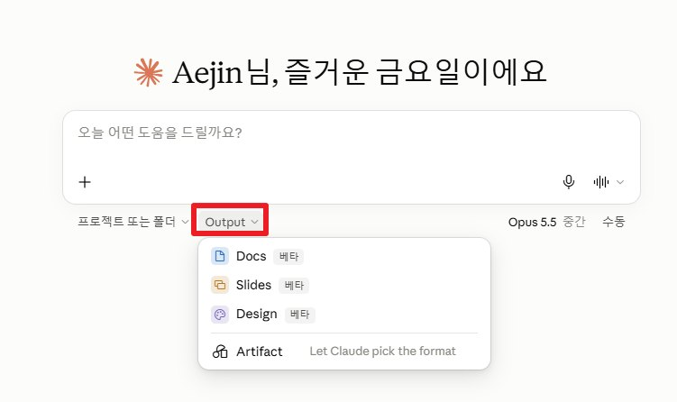
만드는 법 — 따로 없습니다
그냥 말씀하시면 됩니다. “○○ 웹페이지로 만들어 줘” 한마디면 오른쪽에 창이 하나 열립니다. 설치할 것도, 눌러 둘 것도 없습니다.
가정통신문을 종이로도 보내지만, 링크 하나로 같이 보내면 학부모께서 폰에서 바로 보십니다. 일정표, 준비물, 오시는 길, 자주 묻는 질문까지 한 페이지에요.
아래 안내장 내용으로 학부모용 안내 웹페이지를 만들어 줘. - 폰에서 보기 편하게, 글씨는 크게 - 맨 위에 날짜·장소·준비물 세 가지가 먼저 보이게 - 준비물은 체크하며 볼 수 있는 목록으로 - 자주 묻는 질문 세 개를 접었다 펴지게 - 학교 대표번호 말고 개인 연락처는 넣지 마 [안내장 내용 붙여넣기]
설명만 있는 자료가 아니라 눌러 보고, 맞춰 보고, 움직여 보는 페이지입니다. 수업 자료를 정리해서 주시면 그대로 만들어 줍니다.
아래 수업 내용으로 초등 4학년이 혼자 해볼 수 있는 웹페이지를 만들어 줘. - 설명을 먼저 읽고, 눌러서 확인하는 순서로 - 중간에 O/X 문제 다섯 개, 맞추면 바로 표시되게 - 틀리면 왜 틀렸는지 한 줄로 알려 주게 - 4학년이 읽을 수 있는 말로. 어려운 한자말은 풀어서 - 개인정보는 아무것도 묻지 마 [수업 내용 붙여넣기]
여기서 한 걸음 더 가면, 아이들이 페이지에 써 넣은 답이 저장되어 선생님이 한자리에서 보실 수 있습니다. 누가 어디까지 했는지, 어떤 문제를 많이 틀렸는지요.
만드는 법은 같습니다. “답을 저장해서 나중에 모아 볼 수 있게 해 줘”라고 하시면 클로드가 저장할 곳까지 붙여 줍니다.
하시려면 — 이름 대신 번호나 모둠명만 받으세요. 학기가 끝나면 지우세요. 그리고 하시기 전에 학교 정보 담당 선생님께 한 번 여쭤보세요.
오늘 연수에서는 하지 않습니다. 이런 것도 된다는 것만 알고 가시면 됩니다.
한 페이지에 다 담기지 않을 때 — 용량은 16MB까지
아티팩트는 페이지 하나에 16MB까지입니다. 그림과 내려받을 파일도 페이지 안에 같이 들어가서 함께 셉니다. 사진 몇 장, 한글 양식 몇 개 정도는 괜찮습니다. 그런데 PDF 여러 개를 받게 하거나 사진이 많으면 금방 넘칩니다.
| 구분 | 아티팩트 (클로드) | 깃허브 · 넷리파이 |
|---|---|---|
| 만드는 곳 | 대화창에서 바로 | 클로드가 만든 파일을 내가 올려서 배포 |
| 용량 | 16MB까지 — 그림·파일 포함 | 넉넉합니다 — 파일을 폴더째로 올립니다 |
| 내려받을 파일 | 몇 개 정도 | 여러 개도 괜찮습니다 (PDF · 한글 · 압축파일) |
| 고치기 | “여기 고쳐 줘” 한마디 | 클로드가 고친 파일을 다시 올려야 합니다 |
| 필요한 것 | 클로드 계정 | 깃허브나 넷리파이 가입 (무료) |
| 맞는 것 | 안내 페이지, 수업 퀴즈, 한 장짜리 자료 | 연수 교안, 자료실처럼 파일이 많은 것 |
어떻게 올리나 — 클로드에게 이렇게 말하면 됩니다
이 페이지를 깃허브 페이지(또는 넷리파이)에 올릴 수 있게 폴더로 만들어 줘. 그림은 img 폴더에, 내려받을 파일은 files 폴더에 나눠 넣고, index.html에서 그 파일들을 불러오게 해 줘.
- 클로드가 index.html · img 폴더 · files 폴더를 만들어 줍니다.
- 넷리파이라면 — 넷리파이 드롭(Netlify Drop) 화면에 그 폴더를 끌어다 놓으면 바로 주소가 나옵니다. 제일 쉽습니다.
- 깃허브라면 — 저장소를 하나 만들어 폴더 안 파일을 올리고, 설정에서 Pages를 켜면 주소가 나옵니다.
시간이 남으면 이 교안을 켜 두고 — “이것도 대화창에서 한 번에 나왔습니다”만 말씀하세요. 만드는 과정을 보여주기 시작하면 10분이 순식간에 갑니다.
개인정보 경고는 꼭 읽어 주세요. 링크는 자물쇠가 아니라 커튼이라는 것. 선생님들이 신나서 학생 명단을 넣으실 수 있습니다.
파이어베이스 이름은 꺼내지 마세요. “아이들이 쓴 답을 모아 볼 수도 있다”까지만. 방법을 물으시면 “따로 연락 주세요”로 받으시는 게 낫습니다.
묶기 — 다섯 칸과 한 바퀴
여기부터는 보기만 하십니다. 프롬프트는 교안에 남습니다.
업무 하나를 다섯 칸에 넣어봅니다
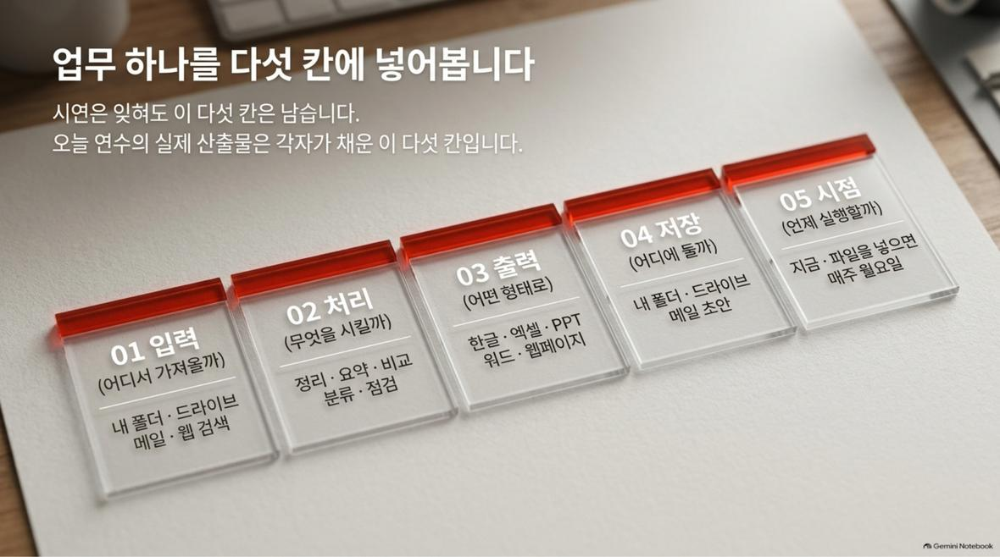
일을 시키기 전에 다섯 칸만 채워 보시면 프롬프트가 저절로 나옵니다. 시연은 잊으셔도 이 다섯 칸은 남습니다.
내 폴더 · 드라이브
메일 · 웹 검색
정리 · 요약 · 비교
분류 · 점검
한글 · 엑셀 · PPT
워드 · 웹페이지
내 폴더 · 드라이브
메일 초안
지금 · 파일을 넣으면
매주 월요일
하나의 행사를 처음부터 끝까지 따라가 봅니다. ①②는 이미 하신 것이고, 여기서는 그 셋이 한 줄기로 이어지는 것만 보시면 됩니다.
방금 코워크 시간에 직접 해 보신 그 장면입니다. 동의서 열 장을 읽고 명렬표와 대조해 안 낸 사람을 찾아낸 일이 한 바퀴의 첫 칸입니다.
이건 직접 해보셨습니다. 스킬 시간에 한글 양식 스킬로 만드신 그 안내장이 한 바퀴의 두 번째 칸에 들어갑니다.
가장 건너뛰기 쉬운 단계이고, 가장 중요한 단계입니다. 학부모께 나가는 문서는 틀리면 전화가 옵니다.
방금 만든 안내장을 원본 메모와 하나씩 대조해서 검증을 한 번 더 해 줘. - 날짜, 요일, 시각, 금액, 신청 기한이 메모와 같은지 - 메모에 없는데 지어낸 문장이 있는지 - [확인 필요]로 남겨야 할 곳을 채워 넣지는 않았는지 - 학부모가 읽기에 어려운 공문 말투가 남아 있는지 고칠 곳은 이유와 함께 알려 주고, 최종 판단은 내가 한다는 전제로 정리해 줘.
행사가 끝나면 영수증이 남습니다. 같은 셋으로 돕니다.
이 폴더의 영수증 사진을 모두 읽고 날짜 / 상호 / 품목 / 금액으로 표를 만들어 줘. 읽기 어려운 건 [확인 필요]로 표시하고, 합계도 내 줘. 엑셀 파일로 저장해 줘.
방금 만든 엑셀로 정산 보고서 초안을 만들어 줘. 같은 폴더의 양식을 그대로 따르고, 항목별 소계와 총계를 넣어 줘. 영수증에서 확인 안 된 항목은 [확인 필요]로 남겨 줘.
보고서의 금액을 원본 영수증 사진과 하나씩 대조해서 검증을 한 번 더 해 줘. 합계를 다시 계산하고, 원본과 다른 곳이 있으면 알려 줘. 최종 판단은 내가 한다는 전제로 정리해 줘.
방금 셋을 매번 차례로 시키는 대신, 하나로 묶어 두는 기능이 있습니다. 다음부터는 폴더에 자료만 넣고 한 줄이면 셋이 다 돕니다.
지금 사용한 세 단계를 하나의 플러그인으로 묶어 줘. 이름은 '체험학습 한 바퀴'로 하고, 실행하면 모으기 → 만들기 → 점검하기가 순서대로 이어지게 만들어 줘.
묶기 전에 알아 두실 것 셋
흐릿한 사진에서 잘못 읽은 값으로 표를 만들면, 그 뒤 단계는 전부 틀린 것 위에 쌓입니다. 그래서 1단계(모으기)는 사람이 한 번 보고 넘어가야 합니다. 묶는 건 2·3단계부터가 안전합니다.
제가 드린 스킬을 그대로만 쓰시면 학교마다 반마다 같은 문장이 나옵니다. 오늘 공문 스킬을 직접 만들어 보신 이유가 이것입니다. 내 말투와 내 순서로 고쳐서 쓰세요.
자동화의 목적은 선생님의 판단을 없애는 게 아니라, 선생님의 기준을 더 일관되게 적용하는 것입니다. 결과를 보고 고칠 곳을 정하는 건 끝까지 사람 몫입니다.
문서와 파일에 쓰던 시간을 줄여서 아이들과 눈 마주치는 시간으로 돌리자는 것이 오늘의 전부입니다.
좋은 자료는 좋은 수업과 꾸준한 관찰에서 나옵니다. 그건 아무도 대신 못 합니다.
3번(점검하기)에 시간을 쓰세요. “최종 판단은 내가 한다는 전제로” 이 한 줄이 오늘 마지막으로 남길 말입니다. 학부모께 나가는 문서라 틀리면 전화가 온다는 걸 같이 말씀하시면 와닿습니다.
플러그인은 “이런 게 있습니다” 정도로. 30초 이상 쓰지 마세요. 여기서 욕심내면 마무리 10분이 날아갑니다.
마지막 셋(알아 두실 것)은 꼭 읽어 주세요. 특히 “판단은 사람이 합니다”. 이 한마디가 있어야 선생님들이 안심하고 쓰십니다.
시간이 밀리면 이 탭을 통째로 건너뛰세요. “교안에 있습니다”로 넘기고 마무리로 가시면 됩니다.
선물
오늘 연수에서는 다루지 않습니다. 그런데 쓰시면 제일 자주 쓰시게 될 것들입니다.
집에 가셔서 — 무료 계정에서 되는 것
| 기능 | 무료 | Pro 이상 |
|---|---|---|
| 스킬 만들기 · 쓰기 · 올리기 | ○ | ○ |
| 채팅에서 파일 올려 작업 | ○ | ○ |
| 아티팩트(문서·웹페이지 만들기) | ○ | ○ |
| 프로젝트(업무별 방 만들기) | ○ 5개까지 | ○ 제한 없음 |
| 코워크 — 폴더 연결 | ✕ | ○ |
| 루틴(예약 실행) · 플러그인 | ✕ | ○ |
하나 — 화면을 통째로 찍는 법
클로드에게 화면을 보여드려야 할 때가 많습니다. 그런데 화면에 다 안 들어가는 긴 표가 문제입니다. 나이스 명단, 긴 공문, 스크롤을 내려야 끝이 보이는 웹페이지요.
Win+Shift+S)로는 보이는 만큼만 찍힙니다. 스크롤을 내리면서 이어 붙이려면 스크롤 캡처가 되는 프로그램이 필요합니다.- 위 단추로 한국어판을 내려받아 설치합니다.
- 실행하면 작은 창이 뜹니다. ‘스크롤 윈도우’를 고릅니다.
- 찍을 창을 한 번 누르면 저절로 스크롤하며 끝까지 찍습니다.
- 저장하고, 그 그림을 클로드 대화창에 끌어다 놓습니다.
이 화면에 있는 표를 그대로 엑셀로 만들어 줘. 흐릿해서 못 읽은 칸은 [확인 필요]로 남겨 줘.
학교 업무용 컴퓨터에 설치하실 때는 전산 담당 선생님께 한 번 여쭤보시는 게 좋습니다. 프로그램 설치를 막아 둔 학교가 있습니다.
둘 — 크롬 브라우저 안으로 클로드를 불러들이기
지금까지는 내 폴더를 맡겼습니다. 이번엔 내가 열어 둔 웹페이지를 맡기는 이야기입니다.
로그인해 둔 사이트를 클로드가 같이 보고, 대신 눌러 줍니다. 화면을 캡처해 올릴 필요도, 내용을 복사해 붙여넣을 필요도 없습니다. 보고 있는 그 페이지 그대로 일을 시킵니다.
- 위 단추를 눌러 Chrome에 추가합니다.
- 클로드 계정으로 로그인합니다.
- 일을 시킬 페이지를 열어 두고, 확장 아이콘을 눌러 이 페이지에서 쓰기를 허용합니다.
- 평소처럼 말로 시킵니다.
이 페이지에 있는 표를 읽어서 엑셀로 정리해 줘. 이 설문 응답을 항목별로 요약하고, 많이 나온 의견 순서로 정리해 줘. 이 페이지의 안내문을 학부모가 읽기 쉬운 말로 다시 써 줘.
페이지마다 허용을 따로 주세요. 한 번에 다 허용하지 마시고, 그 일에 필요한 페이지만.
나이스·업무포털처럼 학생 정보가 있는 화면에서는 쓰지 마세요. 공공기관 시스템은 외부 프로그램의 자동 조작을 허용하지 않는 경우가 있습니다.
결제·본인인증 화면에서는 쓰지 마세요.
시간이 남으면 픽픽 하나만 보여주세요. 30초면 되고, 반응이 제일 좋습니다. 나이스 화면을 스크롤 캡처해서 클로드에 던지는 장면 한 번이면 충분합니다.
크롬 확장은 유료 플랜에서만 됩니다. 연수용 계정으로 “해보세요”라고 하시면 안 되는 분이 나옵니다. “개인 계정이 프로 이상이신 분만”이라고 조건을 먼저 붙여 말씀하세요.
웹페이지 만드는 이야기는 🎨 아티팩트 탭으로 옮겼습니다. 거기도 연수 시간 0분입니다.
더 알아보기
처음부터 읽지 않으셔도 됩니다. 막히실 때 그 자리만 펼쳐 보세요.
한글 파일이 말썽입니다
클로드에 기본으로 들어 있는 문서 기능은 워드 · 엑셀 · PPT · PDF입니다. 한글(hwp)은 없습니다. 우리나라에서만 쓰는 형식이라서요.
한글에서 열어 다른 이름으로 저장 → hwpx로 바꿔 주세요
오늘 드린 한글 양식 스킬이 이걸로 만듭니다
참고_텍스트추출본 폴더 안 .txt를 쓰시면 됩니다.사용량 한도에 걸렸습니다
몇 시간 뒤에 저절로 풀립니다. 잘못하신 게 아니고, 계정이 잠긴 것도 아닙니다.
스킬이 안 켜집니다
스킬은 설명에 적힌 상황과 내 말이 맞을 때 켜집니다. 그래서 말을 조금 바꾸면 켜지는 경우가 많습니다.
- 만들 때 정한 다른 문구로 다시 말해 보세요.
- 그래도 안 되면 대화창 ＋ → 스킬에서 직접 고르세요. 고르면 반드시 켜집니다.
- 계속 안 켜지면 설명 줄을 고치세요 — “이 스킬 설명을 ○○할 때도 켜지게 고쳐 줘.”
엉뚱한 형식으로 나옵니다
한글 파일을 시켰는데 슬라이드나 문서로 나온다면, 입력창 아래 Output이 어딘가에 고정돼 있는 것입니다.
화면이 자꾸 바뀌어서 낯설게 느껴지실 수 있습니다. 입력창 아래 한 줄만 읽으실 줄 알면 됩니다.
또는 폴더
- 본인 컴퓨터에서만 하세요. 공용 PC나 남의 계정에서 하지 않습니다.
- 결과를 링크(아티팩트)로 만들지 마세요. 학생 이름·사진·연락처가 든 페이지는 링크가 되면 주소를 아는 사람이 볼 수 있습니다.
- 지우라고 시키지 않습니다. ‘버릴것’ 폴더에 모아만 두게 하고, 지우는 건 사람이 봅니다.
- 폴더 하나만 맡기세요. 바탕화면이나 내 문서를 통째로 맡기지 않습니다.
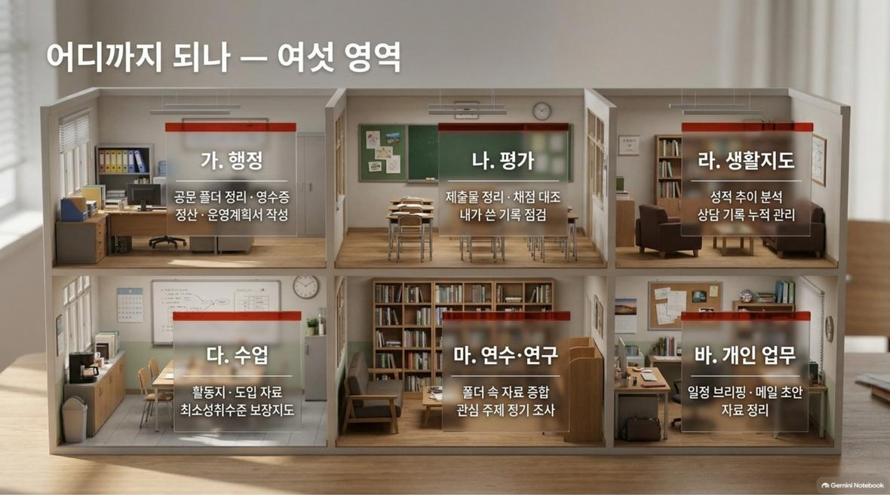
그때마다 저절로 돕니다. ‘예정됨’ 탭에서 확인
＋ → 커넥터 → 둘러보기
코워크가 사무 쪽이라면 이쪽은 제작 쪽입니다
스킬 하나를 제대로 만드신 뒤에
이 페이지는 연수가 끝난 뒤에도 그대로 열립니다. 프롬프트도 실습자료도 전부 여기 있습니다.